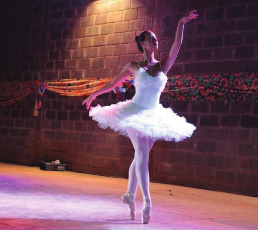
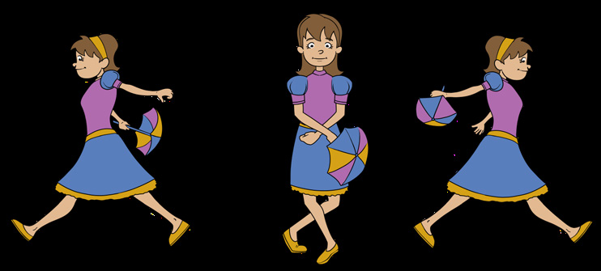
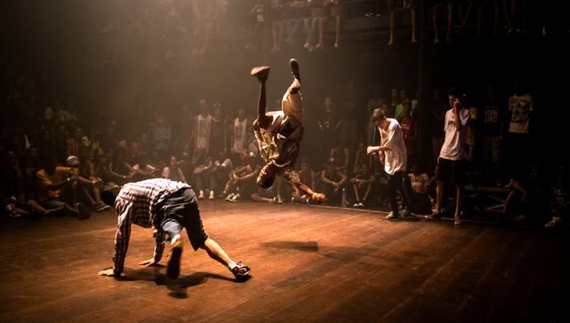
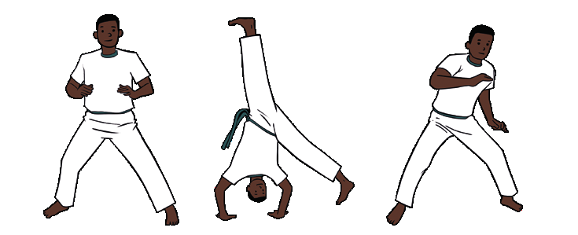

Orientações específicas
e atividades propostas
6.º ano

Sérgio Bonfim dos Santos
EDUCAÇÃO FÍSICA 17
BRINCADEIRAS E JOGOS
Iniciando a busca
Ao trabalhar com essa unidade temática, espera-se que os alunos desenvolvam as seguintes habilidades e competências:
• (EF67EF01) Experimentar e fruir, na escola e fora dela, jogos eletrônicos diversos, valorizando e respeitando os sentidos e significados atribuídos a eles por diferentes grupos sociais e etários.
• (EF67EF02) Identificar as transformações nas características dos jogos eletrônicos em função dos avanços das tecnologias e nas respectivas exigências corporais colocadas por esses diferentes tipos de jogos.
• Competências específicas: 3, 8 e 10
• Competências gerais: 5
• Competências linguagem: 1, 2 , 3, 4, 6
De acordo com a BNCC,
A unidade temática Brincadeiras e jogos explora aquelas atividades vo-luntárias exercidas dentro de determinados limites de tempo e espaço, caracterizadas pela criação e alteração de regras, pela obediência de cada participante ao que foi combinado coletivamente, bem como pela apreciação do ato de brincar em si. (2017, p. 212).
Nessa temática, a BNCC insere como objeto de conhecimento os jogos eletrônicos. O ambiente virtual está cada vez mais presente na vida do ser humano com o uso de video games, computadores e celulares. Buscando o desenvolvimento do aluno, a escola pode e deve fazer uso dessas tecnologias disponíveis, e os jogos eletrônicos são uma ferramentas muito úteis nas aulas de Educação Física, pois proporcionam novas práticas.
Corpo em ação
Jogos eletrônicos
Os jogos eletrônicos apresentados neste material buscam a compreensão dos alunos para que eles percebam os avanços das tecnologias e das respectivas exigências corporais colocadas por esses diferentes tipos de jogos. Os games estilo Fifa Soccer, por exemplo, são os mais tradicionais, pois os comandos ainda dependem do joystick e requerem uma postura sentada do jogador. Já os games semelhantes ao Just Dance exigem que os comandos sejam dados por meio de um acessório semelhante a um tapete que, ligado a uma TV, gera os movimentos, exigindo participação
EDUCAÇÃO FÍSICA18
ativa do jogador, que precisa estar em pé. Os jogos mais modernos são acompanhados de sensores que captam cada movimento dos jogadores. A evolução dosvideo games permitiu muitas mudanças, não só na forma de jogar como também nos gráficos apresentados em cada jogo.
Inicie a aula perguntando aos alunos o que eles conhecem sobre jogos eletrônicos e por que essa temática é abordada em Educação Física. Deixe que falem o que sabem e pergunte sobre alguns termos que estão presentes no universo de jogos eletrônicos e proponha uma pesquisa para defini-los. Termos que poderão surgir: video games; gamer; ciberatletas; e-sports; exergames. Após, inicie um diálogo sobre esses termos.
Fifa Soccer

Fifa Soccer é uma série de jogos, lançada anualmente, que inclui jogadores do mundo todo. Tem uma jogabilidade muito boa, sendo fiel aos comandos de quem está com a posse do joystick. Atualmente, o jogo possui várias ligas do mundo em seu conteúdo, inclusive ligas de futebol feminino. O jogo é atualizado, a cada ano, com materiais diferentes e principalmente com os astros do futebol no seu melhor momento. O intuito do jogo é fazer gol, o máximo que conseguir, durante o tempo regulamentar previamente definido.
Organizando a atividadeMateriais necessários: video game, televisor, papel, caneta e jogo Fifa Soccer.
Número de aulas estimado: 2
Objetivo: experimentar e fruir do jogo eletrônico dentro da escola, interagindo com os colegas e trocando experiências, bem como aprender a organizar um pequeno torneio de futebol.
Sugestão de FilmE
A Era do video game
Ano: 2007.
Produção: Discovery Channel.
A Era do video game é uma visão madura do impacto e da influência dos jogos na sociedade, levando a sério o assunto, mas sem perder o tom de brincadeira. Este documentário possui 5 capítulos: O polegar; O rosto; As pernas; A mente, e O coração. Nesses 5 capítulos, narra a trajetória dos jogos eletrônicos, desde o final da década de 50 até os dias atuais, retratando não apenas aspectos históricos, mas também o impacto e a influência dos games no mundo do entretenimento contemporâneo.

EDUCAÇÃO FÍSICA 19

Os próprios alunos irão organizar um torneio com os colegas, seguin-Sugestão de
do algumas orientações para o bom funcionamento da atividade: definir o LeiturA tempo de jogo; definir se o jogo pode acabar com determinado número de gols, mesmo que o tempo não tenha finalizado; definir o tipo de chave (cada um dos grupos de participantes que devem se enfrentar para se
Exergames:
classificarem para a etapa posterior) a ser adotada; organizar chaves iguais jogos eletrônicos
aos grandes torneios; controlar e atualizar as chaves, uma vez que será e exercícios?
Talita da Silva de Assis e
realizada a fase classificatória, semifinal e final para conhecer o vencedor.
Alfred Sholl-Franco.
O artigo trata dos
exergames, jogos que
Just Dance
utilizam os movimentos
corporais como forma
O Just Dance é um jogo eletrônico que consiste em executar a re-de interação com am-
bientes virtuais, contri-
petição de movimentos de dança em forma de coreografia, por meio de buindo para o aumento
comandos sequenciais transmitidos pela tela da televisão ou pela luz que no repertório de mo-se acende no tapete. A possibilidade de escolher livremente a música vimentos dos alunos.
a se dançar facilita muito, pois selecionar uma de fácil compreensão é Disponível em:
https://cutt.ly/BHd7oya.
sinônimo de boa pontuação, que, de acordo com o desenvolvimento da Acesso em: 25 abr. 2022.
música e do sucesso na execução dos passes, é imediatamente recebida com a exposição na tela.
t
t
Divulgação / Ubisof
Divulgação / Ubisof
Jogo Just Dance, 2015.
Jogo Just Dance, 2015.
Organizando a atividade
Materiais necessários: video game, televisor, papel, caneta e jogo Just Dance.
Número de aulas estimado: 2
Objetivo: experimentar e fruir do jogo eletrônico dentro da escola, procurando aumentar a performance de movimentos corporais de dança.
Todos os alunos irão escolher uma música, com o mesmo grau de dificuldade para que ninguém seja prejudicado. Juntamente com a turma, organize uma tabela com o nome dos participantes, que terão três oportunidades de dançar músicas diferentes (uma um pouco mais lenta, uma mediana e outra rápida), porém, com o mesmo grau de dificuldade. Após cada dança executada, os alunos deverão anotar os valores finais atribuídos
EDUCAÇÃO FÍSICA20


para as suas performances. Ao final, cada aluno deverá escolher uma das danças que executou e dançá-la novamente, tentando superar a pontuação Sugestão de anterior. Dessa forma, não haverá competição entre eles, e sim superação.
LeiturA
De 2006 aos dias atuais houve vários lançamentos de games utilizando joysticks com sensores de movimento, o que revolucionou a forma de jogar, e sensores ligados ao próprio video game sem o uso de joysticks.
Jogos eletrônicos:
uma possibilidade
educativa nas aulas
r
lick
de Educação Física
Leila Pereira Fraga Rodrigues.
m / F
ea.fr
O projeto busca re-
fletir sobre a inserção
gamear
da tecnologia e suas
linguagens nas aulas
de Educação Física,
por meio dos jogos
eletrônicos (games).
Disponível em:
https://cutt.ly/
DHd47c0. Acesso
em: 26 abr. 2022.
Adolescentes no tapete de dança. Frankfurt, Alemanha, 2012.
ceor
ir F
.S. A
omunicação
ay / Uw
una
S.I./ Simon C
irman Shane D
Senior A
Jogo parecido com um controle de televisão permite
Jogo moderno virtual eletrônico.
ao jogador jogar alguns games exclusivamente
São Paulo, SP, 2012.
por movimentos. Yigo, Estados Unidos, 2014.
Jogo de movimento – com sensor
Para jogar esse game, é preciso mais do que simplesmente apertar alguns botões em um joystick preso ao console, o jogador deverá se levantar do sofá e experimentar a liberdade, aumentando sua interação com os games.
No jogo de tênis, por exemplo, o jogador segura o comando como se fosse uma raquete e balança-o de maneira a poder fazer todo o tipo de jogadas. Da mesma forma, nos demais jogos os jogadores irão imitar os movimentos utilizados em cada prática esportiva.
Ao término, organize uma roda de conversa sobre os games, o sedentarismo e sobre a ocupação do tempo livre dos adolescentes e jovens atualmente com games em detrimento das atividades corporais que exigem maior movimentação corporal, como esportes, danças, lutas e práticas de aventura.
21
EDUCAÇÃO FÍSICA


Leitura complementar
Sugestão de
LeiturA
Jogos com sensores de movimento
ajudam no tratamento de pacientes
Educação Física
Escolar: um olhar
Laboratório de realidade virtual da Clínica de Fisioterapia da Newton Paiva sobre os jogos
usa jogos com sensores para auxiliar pessoas com dificuldades motoras eletrônicos
Guilherme Carvalho Franco
da Silveira e Livia Maria
Zahra Barud Torres
S.I. / Simi
Os resultados deste
estudo indicam a
necessidade de as
escolas pesquisadas
refletirem sobre a sele-
ção dos jogos eletrô-
nicos como conteúdo,
oferecendo possibi-
lidades de educar os
jovens para a cultura
eletrônica que, como
outras formas culturais,
interfere na capaci-
dade dos sujeitos de
perceber a realidade.
Disponível em:
https://cutt.ly/sHd-
Games com sensores de movimento ajudam na reabilitação
7vHU. Acesso em:
de pacientes. Belo Horizonte, MG, 2015.
26 abr. 2022.
A tecnologia é uma grande aliada de tratamentos na área da saúde.
Isso não é nenhuma novidade. No entanto, o que não é tão óbvio é que jogos podem trazer grandes benefícios se usados e aplicados no tratamento de pacientes.
Há três anos, o laboratório de realidade virtual da Clínica de Fisioterapia da Newton Paiva, em Belo Horizonte, passou a usar jogos para complementar as terapias convencionais utilizadas na reabilitação de pessoas com dificuldades motoras. Por meio do sensor de movimentos da plataforma, os pacientes conseguem trabalhar membros específicos enquanto jogam.
Os jogos mais utilizados no laboratório de realidade virtual são os de esportes e aventura, já que desafiam os pacientes. “Quando a pessoa é desafiada, aumenta a vontade de realizar algo que, até então, era considerado difícil ou impossível. Encontramos uma forma de incluir outros exercícios e tornar o tratamento mais lúdico e dinâmico”, diz a professora doutora em Ciências da Reabilitação do curso de Fisioterapia da Newton, Renata Cristina Magalhães Lima.
Para a professora, a evolução dos video games com sensores de movimento ajudou a aplicação da realidade virtual na Fisioterapia.
“Nossos pacientes passam por uma criteriosa avaliação, que define se é possível ou não complementar o tratamento com os jogos. Nos casos em que temos usado também o video game como terapia, os resultados são muito interessantes. Recebemos relatos de quem se sentia inseguro e recuperou a estima e as funções motoras após o tratamento”, conta.
SIMI. Jogos com sensores de movimento ajudam no tratamento de pacientes. Sistema Mineiro de Inovação, 6 set. 2016. Disponível em: https://
tinyurl.com/ycq656u6. Acesso em: 10 abr. 2022. (Adaptado).
22
EDUCAÇÃO FÍSICA
Aparelhos eletrônicos para games
São muitos os aparelhos eletrônicos utilizados para a realização dos games, podemos citar os video games, computadores, celulares, tablets, entre outros. Realize uma pesquisa com os alunos para saber quais aparelhos eles mais usam para jogar jogos eletrônicos. Juntamente com eles, organize um gráfico com os resultados.
Partindo da leitura do gráfico, você pode debater o tema transversal contemporâneo Ciência e Tecnologia e Educação para o Consumo, por meio de algumas questões, a influência da evolução tecnológica na troca de equipamentos eletrônicos e a consciência do consumo consciente, pois a indústria eletrônica está sempre lançando novos modelos, incentivando um consumo desenfreado.
Jogos eletrônicos de celular
Faça uma enquete com os alunos e anote os resultados sobre quais jogos eletrônicos eles mais realizam nos aparelhos de celular.
Organizando a atividade
Materiais necessários: aparelhos de celular.
Número de aulas estimado: 2
Objetivo: experimentar e fruir de jogos eletrônicos de celular dentro da escola, interagindo com o colega com respeito, trocando ideias e dicas.
Forme duplas e peça que os alunos escolham um dos jogos elenca-dos, para brincarem juntos. Determine um tempo e vá trocando as duplas.
Jogos eletrônicos de computador
Proponha uma pesquisa aos alunos para que descubram quais jogos são mais realizados no computador, por diferentes faixas etárias. Você pode elaborar, juntamente com eles, um instrumento de pesquisa com entrevistas. Seguem algumas sugestões para passar aos alunos:
• inteirar-se previamente do tema da entrevista, no caso, os jogos realizados em computador;
• o local da entrevista deve ser escolhido pelo entrevistado;
• as perguntas devem ser objetivas, simples e de fácil compreensão;
• explicar o objetivo da entrevista;
• evitar interromper a resposta do entrevistado e não influenciar sua opinião;
• evitar que a entrevista seja longa;
• submeter o registro ao entrevistado, ao término, deixando-o à vontade para rever pontos importantes que deixaram de ser abordados ou foram mal interpretados;
• sempre agradecer a colaboração do entrevistado.
23
EDUCAÇÃO FÍSICA

NOME DA ESCOLA
ALUNO(A): ____________________________________________
TURMA: ____________
PROFESSOR(A): ________________________________________________
OBJETIVO DA ENTREVISTA: conhecer os jogos de computador mais usados pelas pessoas, de diferentes faixas etárias, e coletar opiniões a respeito dos jogos que têm violência.
NOME DO ENTREVISTADO(A): __________________________________________
IDADE DO ENTREVISTADO(A): ______________
DATA DA ENTREVISTA: _______________
1) Você tem computador em casa?________________
2) Acessa algum computador fora de casa? ________________
3) Gosta de jogar no computador? _____________
4) Se sim, qual ou quais são os jogos de que mais gosta? _______________________________
___________________________________________________________________________________
__________________________________________________________________________________
5) Você acha que os jogos eletrônicos violentos são capazes de influenciar no comportamento das pessoas que os jogam? Justifique a resposta. ______________________________________
____________________________________________________________________________________
____________________________________________________________________________________
Após realizadas as entrevistas, é o momento de reunir e tabular os dados.
Pergunta 1 – quantos disseram sim e quantos disseram não.
Pergunta 2 – quantos disseram sim e quantos disseram não.
Pergunta 3 – quantos disseram sim e quantos disseram não.
Pergunta 4 – a) quantos disseram sim e quantos disseram não.
b) nome dos jogos e quantidade de vezes que se
repete.
Pergunta 5 – a) quantos disseram sim e quantos disseram não.
b) justificativa e quantidade de vezes que se repete.
Você pode agora organizar os dados por faixa etária, por exemplo:
• Crianças de 5 a 10 anos
• Pré-adolescentes de 11 a 14 anos
• Adolescentes de 15 aos 19 anos
• Juventude dos 20 aos 24 anos
• Adultos acima de 24 anos
• Idosos acima de 60 anos
Você pode também elaborar gráficos dos resultados, juntamente com os alunos, conversando com ele sobre as informações levantadas.
24
EDUCAÇÃO FÍSICA


Organizando a atividade
Materiais necessários: computadores, notebooks.
Número de aulas estimado: 2
Objetivo: experimentar e fruir de jogos eletrônicos de computador dentro da escola, ainda não conhecidos, interagindo com os colegas com respeito, trocando ideias e dicas.
, USAID
ber
Organize a turma em grupos, conforme o
número de aparelhos eletrônicos que dispuser
Ben Bar
na sala de aula, que podem ser os da escola
ou trazidos pelos alunos.
Solicite que cada grupo escolha um jogo
que tenha aparecido nas entrevistas, mas que
eles nunca jogaram.
Instigue os alunos a pesquisarem as re-
gras do jogo escolhido e, após, experimen-
tarem como se realiza o jogo.
Crianças jogando no computador. São Paulo, SP, 2017.
AvaliandO
Em uma roda de conversa, solicite que os alunos relatem as experiências que tiveram no desenvolvimento das aulas com os jogos eletrônicos. De que forma experimentaram e fruíram os jogos eletrônicos? Quais foram os movimentos exigidos em cada um dos jogos eletrônicos explorados? Houve mudanças na forma de jogar video game no decorrer dos anos? Quais?
Você deverá analisar o envolvimento dos alunos, avaliando se ampliaram o seu conhecimento acerca dos jogos eletrônicos, bem como se tiveram a oportunidade de vivenciá-los. Avalie se conseguiram identificar as transformações nas características desses jogos em razão dos avanços das tecnologias e nas respectivas exigências corporais colocadas por esses diferentes tipos de jogos.
25
EDUCAÇÃO FÍSICA

ESPORTES
Iniciando a busca
Ao trabalhar com essa unidade temática, espera-se que os alunos desenvolvam as seguintes habilidades e competências:
• (EF67EF03) Experimentar e fruir esportes de marca, precisão, invasão e técnico-combinatórios, valorizando o trabalho coletivo e o protagonismo.
• (EF67EF04) Praticar um ou mais esportes de marca, precisão, invasão e técnico-combinatórios oferecidos pela escola, usando habilidades técnico-táticas básicas e respeitando regras.
• (EF67EF05) Planejar e utilizar estratégias para solucionar os desafios técnicos e táticos, tanto nos esportes de marca, precisão, invasão e técnico-combinatórios como nas modalidades esportivas escolhidas para praticar de forma específica.
• (EF67EF06) Analisar as transformações na organização e na prática dos esportes em suas diferentes manifestações (profissional e comunitário/lazer).
• (EF67EF07) Propor e produzir alternativas para experimentação dos esportes não disponíveis e/ou acessíveis na comunidade e das demais práticas corporais tematizadas na escola.
• Competências específicas: 5, 8, 10
• Competências gerais: 1, 9, 10
• Competências de linguagens: 3
Enquanto disciplina escolar, a Educação Física apresenta conteúdos variados, como os esportes, os jogos e brincadeiras, a ginástica com suas variações, porém, observa-se a prevalência do esporte como conteúdo base, sobrando pouco espaço para ginástica artística e atletismo, por exemplo.
Assim como as demais unidades temáticas, os esportes precisam despertar nos alunos interesse e prazer com intenção educativa em sua prática. Portanto, essa intenção precisa ser repensada de modo coerente para que o trabalho não seja restrito e repetitivo. Seguindo essa linha de raciocínio, esta unidade tem por objetivo diversificar o repertório de vivências práticas dos alunos.
Fale sobre os esportes e outras práticas corporais (ginástica, dança, jogos, lutas, etc.) no cotidiano das pessoas e seus objetivos para saúde, qualidade de vida, lazer e profissões.
Outro ponto relevante é que o esporte pode ser trabalhado com adaptações consideradas importantes. Dependendo da necessidade, elas devem ser realizadas para que a prática do esporte se amplie e chegue ao alcance de todos, independentemente de suas condições motoras, físicas e intelectuais.
26
EDUCAÇÃO FÍSICA


Essas adaptações podem ocorrer por meio da modificação das regras, promovendo a inclusão, a solidariedade e a cooperação, tornando as atividades menos complexas e, consequentemente, menos agressivas. O objetivo é fazer com que os alunos deixem de jogar um contra o outro e passem a ser peça essencial para o sucesso de ambos, trabalhando em equipe.
Por esse motivo, abordamos os jogos cooperativos como variação essencial para constituição deste manual. Portanto, em determinados momentos, esses jogos cuja característica principal é fomentar a cooperação acima da competição, se sobrepõem aos jogos competitivos. Porém, não podemos deixar de mencionar um assunto delicado, que é a formação das equipes nos momentos de jogar.
Dessa forma, não podemos deixar de mencionar um assunto delicado, que é a formação das equipes nos momentos de jogar. Busque sempre uma variação na formação das equipes, para evitar que determinados alunos sejam sempre os últimos a serem escolhidos e acabem estigmatizados ou classificados de acordo com suas performances ou relacionamento social.
As equipes formadas no dia anterior também devem sempre ser mudadas.
Corpo em ação
Esportes de marca
São esportes nos quais o desempenho dos atletas é fundamentado na comparação dos registros de marcas alcançadas por tempo, peso e/ou metros. Para esses esportes, os alunos/atletas buscam o máximo de seu desempenho com o intuito de superar a marca em questão ou simplesmente fazer o seu melhor para atingir o seu ápice.
Primeiramente, organize uma roda de conversa e dialogue com a turma a respeito do que conhecem sobre esportes de marca. Antes de levantar os conhecimentos prévios dos alunos, esclareça que são esportes como remo, levantamento de peso, ciclismo, patinação de velocidade, atletismo (corridas, saltos, arremessos e lançamentos), natação, entre outros, a fim de situá-los nessas modalidades.
Procure ouvir a turma a respeito do que sinalizam como preferência pelas atividades, sobre as dificuldades que acreditam ter e sobre o que esperam obter com tais práticas. É fundamental considerar os interesses da turma, os quais precisam ser balizados de acordo com os seus encaminhamentos metodológicos, a fim de que seja possível realizar um trabalho com bom aproveitamento.
Esse momento inicial de diálogo é essencial para que tanto você como a turma possam vislumbrar as expectativas sobre o que será trabalhado nesta unidade. Aproveite o momento para salientar que serão abordados os esportes de marca mais tradicionais.
27
EDUCAÇÃO FÍSICA


Atletismo
Por meio de pesquisa ou diálogo, aborde com os alunos o esporte atletismo, mostrando quais são as modalidades (provas) que são realizadas nas Olimpíadas.
Com uma história tão extensa, o atletismo reuniu 24 modalidades ao longo do tempo. São elas: 100 m, 200 m, 400 m, 800 m, 1 500 m, 5 000 m, 10 000 m, maratona, 100 m com barreiras, 400 m com barreiras, 3000 m com obstáculos, revezamento 4 x 100 m e 4 x 400 m, 20 km de marcha atlética, 50 km de marcha atlética, salto em distância, salto triplo, salto em altura, salto com vara, arremesso de peso, lançamento de disco, lançamento de martelo, lançamento de dardo, decatlo (masculino) e heptatlo (feminino).
Atletismo – Corridas de velocidade
Muitos estudiosos consideram que o nascimento da corrida ocorreu na Pré-História, pela necessidade de o ser humano se locomover de forma mais rápida do que andando, seja para fugir de alguns perigos ou perseguir a caça da qual dependia sua sobrevivência.
Seguindo em frente na história, observamos que a corrida passou a ser disputada em forma de competição. Na Grécia Antiga, havia competições de corridas, que eram conhecidas por stádion. Muita coisa mudou de lá para cá, como: as regras, os implementos, o vestuário, o tipo físico dos atletas.
De acordo com Gobbi et al (2005), o conceito de velocidade em Educação Física, especialmente nos esportes, está ligado à ideia de velocidade máxima, que é o maior limite de velocidade possível de ser atingido por um corpo ao executar uma atividade motora.
Em outras palavras,
JF
velocidade é a capaci-
om UF
dade que um corpo tem
de realizar esforços de
oza A / sec
máxima intensidade e
o Bic
frequência de movimen-
Freder
tos, ou a capacidade de
percorrer a maior distân-
cia dentro de um menor
tempo.
No atletismo, existe
a velocidade pura, re-
presentada pelas provas
clássicas de 100 e 200
metros rasos, e a veloci-
dade prolongada ou de
Corrida Infantil na Universidade Federal de Juiz de Fora, MG, 2015.
manutenção, nas provas
de 400 metros rasos.
A prática regular da corrida amplia a capacidade respiratória, melhora a circulação sanguínea e aumenta consideravelmente a força muscular.
28
EDUCAÇÃO FÍSICA


Organizando a atividade
Materiais necessários: cones, apito e cronômetro.
Número de aulas estimado: 4
Objetivo: vivenciar com entusiasmo a corrida, percebendo suas possibilidades e limites, respeitando as dos colegas e reconhecendo a sua importância no resultado coletivo.
Para iniciar essa atividade prática, organize a turma em grupos.
Estabeleça, então, um ponto de partida e um ponto de chegada. No ponto de partida, ou largada, os alunos devem estar devidamente alinhados, respeitando as regras determinadas para cada variação de competição, por exemplo: a largada será realizada com os alunos em pé, devendo os dois pés estarem posicionados atrás da linha de partida, sem sequer tocá-la.
A largada pode acontecer com variações de estímulos sonoros, ges-tuais, visuais ou táteis, os quais podem ser representados por apito, buzina, movimento com as mãos ou qualquer
outra parte do corpo.
Em uma corrida de ve-
locidade, o vencedor será
aquele que completar,
de acordo com as
regras, o percurso
tos
definido no menor
an
tempo possível.
Entretanto, não se
onfim dos S
pode esquecer que
gio B
Sér
a inclusão de de-
terminados alunos
é necessária e muito
saudável para a manu-
tenção da motivação e
da autoestima deles. Desse
modo, é possível criar grupos
equilibrados e promover a somatória
de todos os tempos de cada grupo para de-
terminar, ao final, qual deles obteve sucesso. O objetivo é que os alunos percebam que participar ativamente de uma equipe e tentar fazer o seu Obtenha várias
informações sobre o
melhor, unindo forças, pode trazer resultados surpreendentes.
atletismo acessando
o site oficial da
Para que o aluno perceba que as regras podem ser modificadas, Confederação
converse sobre essa nova forma de vivenciar uma corrida. Proponha que Brasileira de
Atletismo. Disponível
eles criem, em duplas, trios ou pequenos grupos, uma nova forma de em: http://www.
realizar uma corrida cujo objetivo seja a cooperação. Deverão apresentar cbat.org.br/. Acesso
em: 11 abr. 2022.
os resultados na aula seguinte.
29
EDUCAÇÃO FÍSICA

Corrida com velocidade invertida (Corrida do lento)
Em uma corrida de velocidade, o que se espera é que o vencedor seja aquele que completar, no menor tempo, o percurso definido. Dessa forma, apenas os mais velozes se consagram com resultados positivos, criando, assim, uma imagem de “o melhor da turma”, “o campeão”.
Pensando em evitar esses rótulos, sugere-se inverter o objetivo da corrida, oportunizando que todos possam ser o último a cruzar a linha de chegada, ou seja, quanto mais lento e paciente for o aluno, melhor será seu desempenho.
Organizando a atividade
Materiais necessários: cones, apito e cronômetro.
Número de aulas estimado: 2
Objetivo: perceber que as regras dos esportes podem ser modificadas, criando uma nova forma de realizá-los, atendendo ao interesse do grupo que os realizam e, assim, tornar-se um agente de cultura.
Partindo de um ponto inicial predefinido, após o estímulo de largada combinado com os alunos (escolha com eles um dos sinais citados anteriormente ou outro), eles devem executar o movimento que um corredor de velocidade faria, movimentando braços e pernas.
O diferencial dessa atividade é que o movimento executado nessa corrida deve ser o mais lento possível, não sendo permitido parar. Vence quem tiver mais paciência para executar lentamente os movimentos, tiver maior
controle da ansiedade e fizer o percurso
c o m p l e t o d e n t r o d a s r e g r a s
(executando os movimentos de
corrida e não parando) no maior
tempo. Para tanto, o circuito
deve ser pequeno, pois,
como o objetivo da prova
é ser o mais demorado
p o s s í v e l , a o s e
e s t a b e l e c e r u m
circuito grande,
este poderia levar
tosan
horas para ser
concluído.
onfim dos S
gio B
Sér
Corridas com obstáculos
Entre as corridas com obstáculos há provas rápidas, médias e longas, que variam de 110 m com barreiras até provas de 3 000 m, com obstáculos.
Durante o percurso dessas provas, existem obstáculos que aumentam o grau de dificuldade do percurso, sobre os quais os atletas têm de saltar, transpondo-os.
Como exemplo de algumas provas com tais características, podemos citar as modalidades de 2 000 m e 3 000 m, nas quais cada volta na pista terá 4 obstáculos e 1 fosso de água. Na prova de 3 000m, o atleta irá saltar 30
EDUCAÇÃO FÍSICA


28 vezes sobre os obstáculos e 7 vezes sobre o fosso de água, no total.
Na prova de 2 000 m, o atleta terá de saltar 18 vezes sobre os obstáculos e 5 sobre o fosso.
o
endes
Técnicto
igo M
odr
tamen
o R
epar
nstitut
que / I
Rosinha C / D
lbuquer
Pat A
Corrida de obstáculos com pneus.
Corrida de obstáculos com arcos.
Instituto Rodrigo Mendes. São Luís, MA, 2015.
Anápolis, GO, 2015.
Na escola, são sempre muito bem-vindas adaptações simulando os obstáculos originais assim como outras que venham enriquecer o percurso e as experiências. Primeiramente, entre o ponto inicial e a linha de chegada serão posicionados obstáculos, com a função de fazer com que os alunos mudem de direção (direita/esquerda/frente/trás), saltem ou passem por baixo deles.
Trabalhando dessa forma, além da velocidade, são desenvolvidas a agilidade, a força e a potência muscular de membros inferiores e também a lateralidade. Inclusive, o desafio se torna mais atrativo, divertido e complexo por permitir que não apenas o mais veloz vença, pois as variações passam a quebrar o ciclo de velocidade. Nesse momento, outras capacidades e qualidades físicas se evidenciam, bem como a maneira estratégica que o aluno adota para concluir o circuito proposto.
Organizando a atividade
Materiais necessários: cones, apito, cronômetro, arcos, barreiras de PVC, escada, colchonete e corda grande.
Número de aulas estimado: 1 a 2
Objetivo: planejar e utilizar estratégias para solucionar os desafios técnicos e táticos da corrida com obstáculos.
Os alunos podem ser organizados em várias colunas, com número igual de integrantes. Se alguma das colunas tiver um integrante a menos, um deles pode ser previamente escolhido para correr duas vezes, a fim de equilibrar o número de participantes. Assim, nenhuma equipe fica em desvantagem.
Para estabelecer o circuito, basta determinar pontos diferentes em que os alunos precisarão transpor obstáculos, os quais exigirão variar o tipo de esforço, como: saltos verticais, saltos horizontais, agachamento, repetições, etc.
31
EDUCAÇÃO FÍSICA
A seguir, apresentamos um exemplo de circuito que pode ser prepa-rado para essa atividade.
• Primeiro obstáculo: estique uma corda grande, atravessando a pista de corrida de lado a lado, na altura da linha dos joelhos dos participantes, aproximadamente. Os alunos deverão passar por baixo da corda, sem tocá-la, e seguir para a próxima estação.
• Segundo obstáculo: coloque um obstáculo de altura moderada, pode ser uma barreira semelhante à do atletismo (construída com canos de PVC), por cima do qual os alunos irão realizar um salto vertical com os dois pés juntos. Comente que, no momento que chegarem em frente à barreira, haverá uma pausa mínima para que ocorra a junção dos pés, a fim de que ambos transponham a barreira e toquem o solo, logo após o salto, ao mesmo tempo.
• Terceiro obstáculo: disponha os cones para que os alunos os con-tornem com deslocamentos laterais em zigue-zague, sem tocá-los.
• Quarto obstáculo: organize os arcos enfileirados no chão. Os alunos passarão por uma sequência de 10 saltos, com o apoio de apenas uma das pernas dentro de cada arco.
• Quinto obstáculo: coloque a escada no chão. Os alunos deverão tocar os dois pés, alternadamente e com a maior velocidade possível, dentro de cada quadrado que compõe a escada. Solicite cinco repetições.
• Sexto obstáculo: para finalizar, eles realizarão um salto horizontal, passando pelo colchonete, sem tocá-lo. Dessa forma, o percurso estará completo. O objetivo é que todos os alunos passem por todos os obstáculos, controlando o tempo de maneira individual.
i
esk
i Ziar
uig
o L
Pietr
Se o foco do trabalho for competitivo, pode-se estabelecer que o vencedor seja aquele que finalizar o circuito integralmente no menor tempo, cumprindo regras estabelecidas. Porém, se o foco for promover a inclusão, é essencial que seja dada ênfase cooperativa para privilegiar a todos, sem diferenciar as qualidades físicas e técnicas de cada um.
Para tanto, é ideal que o circuito seja realizado na íntegra por todos os 32
EDUCAÇÃO FÍSICA


alunos, de uma possível equipe ou mesmo de forma individual, não im-portando o tempo e sim que a atividade seja concluída, levando-se em consideração a participação de toda a turma, sem exceção.
AvaliandO
Você pode avaliar os alunos por meio da ficha avaliativa proposta no fim deste manual ou pela observação direta nas atividades práticas.
Observe se o aluno tentou vencer os desafios propostos, superando medos e limitações impostas na atividade do salto em altura.
As questões de segurança do esporte também podem ser levantadas, principalmente com aqueles alunos que vão prosseguindo na atividade até que cheguem ao seu limite.
Outra discussão que pode ser proposta aos alunos é sobre as questões surgidas durante todo o processo, bem como as presentes no meio esportivo: discriminação por cor, etnia, gênero, orientação sexual, e os menos habilidosos; vencer a qualquer custo, com agressões verbais e até físicas surgidas durante as práticas; cooperação; prazer em jogar; desconhecimento de alguns esportes vivenciados por serem pouco divulgados pela mídia, por não serem realizados nos espaços da comunidade e outras questões relevantes.
Corpo em ação
Esportes de precisão
Os esportes de precisão não estão muito presentes nas escolas, mas des-pertam o interesse da sociedade como forma de lazer. Em geral, nos esportes de precisão não existe oposição direta, os adversários não interagem e os parâmetros utilizados para avaliar o vencedor serão com base em compara-ções entre os desempenhos dos oponentes. A comparação está relacionada à eficiência para alcançar determinado alvo, modelo ou objeto. Cabe um questionamento para a turma sobre o que eles conhecem a respeito dos esportes de precisão, ou seja, aqueles que têm por objetivo posicionar/aproximar um objeto (que pode ser uma bola, um disco, um dardo, etc.) ou atingir um alvo.
São denominados esportes de precisão, portanto, todos aqueles em que a eficiência máxima para atingir um objetivo, um alvo ou uma marca depende de uma ação motora da melhor qualidade que se pode obter para determinadas situações. Os movimentos precisam ser limpos, controlados e dominados pelo executor.
Serão trabalhados neste material esportes que já fazem parte do repertório de práticas dos alunos e outros que ainda podem ser desconhecidos, como o futegolfe.
33
EDUCAÇÃO FÍSICA


Futegolfe
Footgolf ou futegolfe é um divertido esporte que combina futebol e golfe. Essa modalidade há algum tempo é um esporte oficial praticado por vários países, inclusive o Brasil. Geralmente é jogado em campos de golfe. Os jogadores têm de acertar uma bola de futebol em um buraco de aproximadamente 53 cm,
ommons
usando o menor número possível de chutes. A maioria
imedia.c
das regras corresponde às de golfe e há até um có-
digo de vestuário. Obstáculos como árvores, água e
morros devem ser evitados para tornar o jogo mais
.dittinger / wik
fácil. O primeiro chute deve ser feito do tee (suporte Tomas
para a bola, que sinaliza o ponto a partir do qual se
bate a primeira tacada em cada buraco no golfe).
Em alguns países, o jogo também apresenta
Campo de Futegolfe. Skalica, Eslováquia, 2015.
obstáculos artificiais – nos quais os jogadores não
estão autorizados a tocar ou mover. Os jogadores
devem lançar a bola no buraco. Para isso, têm de combinar poderosos chutes com tacadas estratégicas, a fim de completar o percurso de 9 ou 18 buracos o mais rápido que puderem.
Embora o futegolfe ainda seja jogado em uma escala
Para mais informações sobre o futegolfe,
relativamente pequena, é um esporte que está crescen-
acesse os sites da Federação Brasileira
de FootGolf e do FootGolf em Portugal,
do rapidamente. Suas origens não são claras, mas a sua
respectivamente disponíveis em:
oficialização pode ser atribuída à Holanda, país no qual o http://fbfootgolf.com.br/ e http://
footgolf.pt/. Acesso em: 29 abr. 2022.
conjunto de regras foi padronizado em 2009. Sua popula-
ridade se expandiu por todo o mundo desde então e, de
acordo com a Liga Americana de Futegolfe, o esporte já é praticado em mais de 30 países. A primeira Copa do Mundo de Futegolfe foi realizada em 2017 na Hungria.
Organizando a atividade
Materiais necessários: arcos, cordas, giz, caixas de papelão e cabos de vassoura.
Número de aulas estimado: 2
Objetivo: vivenciar o esporte de precisão, usando habilidades técnico-
-táticas básicas e respeitando regras e colegas.
O início do jogo acontece em local definido previamente, sendo que o primeiro chute obrigatoriamente deve que ser feito a partir do tee (ponto de partida). Como estamos trabalhando esse esporte na escola, certamente será preciso adaptar o campo com os obstáculos e os buracos. Entretanto, para isso não são necessários grandes investimentos, pois entre os muitos materiais que temos na escola – não somente os da Educação Física –, podemos criar nosso próprio campo, podendo ser com arco, cordas, giz, caixas de papelão, cabos de vassoura, etc.
34
EDUCAÇÃO FÍSICA


Jogo de futegolfe adaptado
Proporcionar a vivência para alunos especiais
– sejam eles cadeirantes, com dificuldades
motoras ou de mobilidade, com paralisia de
membros inferiores ou mesmo algum grau
de paralisia cerebral – é muito importante,
além de extremamente gratificante. Para que
essa facilitação aconteça, são necessárias
tosan
pequenas adaptações. O aluno, em vez de
chutar a bola até chegar ao alvo, deverá
empurrá-la usando um bastão, um taco
onfim dos S
de betes ou outro objeto similar. Para o
gio B
deslocamento, poderá receber auxílio de
Sér
um tutor ou mesmo um colega da turma.
Dodgeball/Caçador
on
O dodgeball é um jogo bastante
praticado nos Estados Unidos, onde é
oficializado, cujas competições oficiais
irman Jason Huddlest
são regulamentadas pela Associação
enior A
Nacional de Dodgeball Amador.
o / S
No Brasil, é muito comum e bastan-
ce photor
te praticado nas escolas, contudo não
ir F
é um esporte oficializado. Ao longo do
.S. AU
país, é chamado de Caçador, Caçador
Russo, Jogo da Queimada, Queimada
Americana, etc.
Dodgeball. Missouri, EUA, 2014.
Comprimento: 65 m.
3 m.
3 m.
gura: 30 m.
Lar
Área dos “queimados”
Área de ataque
Área de jogo sem bola
1
2
3
3
2
1
35
EDUCAÇÃO FÍSICA

A quadra oficial de dodgeball está representada por meio da ilustra-Esta aula de
dogdeball, disponível
ção a seguir.
em: https://tinyurl.
As equipes são formadas por seis a dez jogadores (seis em quadra com/y7ay3e35,
poderá auxiliá-lo no
e quatro reservas). Dá-se início à partida com os seis jogadores de cada desenvolvimento da
equipe (sendo que só pode iniciar-se com no mínimo quatro por equipe), atividade. Acesso
em: 29 abr. 2022.
posicionados atrás da linha de fundo da quadra.
Logo que o juiz sinalizar o começo do jogo, os jogadores de ambos os times vão para a linha central, onde estão colocadas seis bolas. Ao pegar as bolas, os jogadores ainda não podem jogá-las contra os adversários; somente quando estiverem na área de ataque, ou seja, atrás da linha dos 3 metros.
O jogo tem como objetivo eliminar todos os jogadores da quadra adversária. Para tanto, devem-se seguir estas regras:
1) Primeiramente, cada equipe precisa ter o mesmo número de integrantes do sexo masculino e do sexo feminino.
2) Para eliminar o adversário, deve-se acertar a bola em uma das partes de seu corpo, mas somente abaixo da linha dos ombros; quem atingir o outro na cabeça será eliminado.
3) Quando o oponente conseguir agarrar a bola, sem deixá-la cair no chão, o arremessador é que será eliminado. Nesse caso, quem segurar a bola poderá fazer retornar ao jogo um jogador que tenha sido eliminado.
4) Vence a equipe que eliminar primeiro todos do time adversário.
Durante o jogo, é estabelecido um tempo de cinco minutos para que uma das equipes seja eliminada; caso contrário, vence a que tiver mais jogadores em quadra.
Se eventualmente as duas equipes contarem com um número igual de jogadores, inicia-se uma prorrogação de até um minuto. Então, quem não foi eliminado permanece em quadra e o time que fizer o primeiro ponto vence a partida.
Organizando a atividade
Materiais necessários: entre seis e doze bolas macias ou levemente murchas.
Número de aulas estimado: 2
Objetivo: vivenciar o esporte de precisão, usando habilidades técnico-
-táticas básicas e respeitando regras e colegas, bem como estabelecer a diferença entre jogo e esporte.
Como as regras oficiais possuem limitações para a organização do jogo e estamos transferindo essa realidade para dentro do contexto escolar, é possível adaptar-se muitas regras para que o jogo possa fluir e contemplar toda a turma, fazendo com que todos os alunos possam ter uma função e participação efetiva.
36
EDUCAÇÃO FÍSICA

Explique para os alunos como acontece o jogo dodgeball e ques-tione-os sobre algum jogo semelhante que eles conhecem ou já tenham experimentado. Provavelmente irão dizer caçador ou queimada. Então, proponha que realizem o caçador da maneira como conhecem, estabelecendo previamente as regras. Aproveite para abordar inclusive a parte do corpo que não poderá ser atingida, a cabeça, e a força empregada no arremesso da bola no colega, evitando acidentes. Reforce que o objetivo do jogo é a precisão no alvo móvel e não a violência.
tosan
onfim dos S
gio B
Sér
Após, proponha a realização do esporte dodgeball.
Em vez de dividir a turma em várias equipes com oito integrantes cada, se houver um espaço grande pode-se formar apenas dois grupos. Dessa forma todos os alunos estarão participando ativamente da aula e, uma vez que a atividade permite uma rotatividade muito grande dos alunos que retornam e são eliminados, percebe-se que o tempo útil de cada aluno em quadra realizando a atividade aumenta consideravelmente. As demais regras podem ser manti-das para não se desconfigurar severamente a atividade, ao mesmo tempo em que a adaptação de novas regras permite que o jogo fique menos complexo, mais agradável e com uma maior variedade de opções para se obter sucesso.
Recomenda-se, então, dividir a turma em dois grupos, posicionando cada um sobre a linha de fundo ao final de sua quadra. As bolas serão posicionadas sobre a linha do meio da quadra ou a que esteja dividindo, em duas partes iguais, o local de realização da atividade. Podem ser usadas quantas forem necessárias (um bom número é entre 6 e 10 bolas) para um bom volume de jogo, sem muitas pausas e com bastante ação.
Ao se iniciar um jogo de dodgeball, o objetivo do time é pegar o maior número de bolas para obter vantagem numérica e territorial sobre a outra equipe. Ao seu comando de início de jogo, os alunos devem correr estrategicamente para pegar as bolas posicionadas a o centro e tentar acertá-las nos adversários, cuidando para não machucá-los, mas somente após recuar até a linha dos 3 m, evitando ser atingidos pelos alunos do time adversário. Quem for acertado pela bola e esta tocar o chão, estará “morto” e deverá se direcionar para área de espera que fica situada na lateral ou na linha de fundo do campo.
37
EDUCAÇÃO FÍSICA

tosan
onfim dos S
gio B
Sér
Os alunos que forem “queimados” poderão retornar ao campo de jogo quando algum integrante do seu time segurar uma bola arremessada pelo adversário, ou quando alguém do seu time acertar algum adversário da cabeça para baixo, além de mandar aquele que foi “queimado” para a área de espera.
Durante o jogo, solicite alguns “pedidos de tempo” para que as equipes possam se reunir e analisar os resultados, mantendo ou modificando as estratégias de jogo, a organização do ataque e da defesa e outros que acharem necessários, desenvolvendo assim, a reflexão sobre a ação.
AvaliandO
Verifique por meio da observação direta e rodas de conversas se os alunos se apropriaram de conhecimentos e conceitos básicos de cada esporte de precisão que foi trabalhado e se os esportes que não eram conhecidos tiveram boa aceitação e foram bem desenvolvidos por eles e também quais dos esportes foram os preferidos pela turma.
Avaliar o entendimento e organização para estratégias que mo-difiquem o comportamento do aluno ou equipe e analise seus pontos vulneráveis a fim de organizar a melhor forma de pontuar.
Analise a importância do trabalho em grupo, ao ponto de perceber se o grupo, ao agir e se proteger, passa a ter mais chances de sucesso, ou se essas intervenções não geram modificações no padrão de jogo, de forma que cada aluno jogaria de acordo com sua vontade e assumindo riscos individualmente.
Vale ressaltar também que é importante a avaliação dos alunos a respeito do risco a que ficaram expostos durante a atividade e quais soluções e atitudes tomariam para minimizar eventuais riscos.
38
EDUCAÇÃO FÍSICA


Corpo em ação
Esportes de invasão
Organize uma roda de conversa para levantar alguns conhecimentos prévios dos alunos sobre os esportes de invasão e identificar quais eles já conhecem.
Permita que eles se expressem livremente e citem as possíveis modalidades.
Os esportes que se enquadram nessa categoria são aqueles que têm como prioridade e objetivo a tomada de território, setor da quadra ou campo, defendido por um ou mais adversários. A finalidade é pontuar, seja marcando um gol, cesta ou ultrapassando linhas, porém, sem se esquecer de proteger seu campo dos adversários, para que não pontuem.
Dessa forma, o ataque e a defesa devem trabalhar de forma simultânea e organizada, reduzindo os espaços dos adversários e tendo como alvo a meta adversária. Solicite que os alunos observem, durante uma semana, a programação esportiva de diferentes emissoras televisivas e anotem o nome dos esportes, da emissora e dos programas, o horário da transmissão e quais as modalidades mais comentadas.
Proponha uma pesquisa de campo, que pode ser realizada como tarefa de casa, em que os alunos visitem a comunidade local para identificar as modalidades esportivas oferecidas, tanto em espaços públicos como privados.
Com os resultados apresentados pelos alunos, elabore uma lista com o nome das modalidades esportivas presentes em cada situação e a quantidade de vezes que apareceram. Logo após, construa com eles dois gráficos com os resultados. No primeiro gráfico, os alunos farão uma análise de quais são os esportes mais divulgados pela mídia televisiva e, no segundo, quais os esportes mais praticados na comunidade. Essa atividade pode ser desenvolvida com o auxílio do professor de Matemática.
Converse com a turma sobre a preferência por alguns esportes e não por outros; sobre a presença de esportes masculinos e femininos; sobre os esportes que têm mais patrocinadores; em que modalidade esportiva aparecem mais atletas nas propagandas e outras questões que achar importantes.
Solicite que os alunos acessem o link http://arquivo.esporte.gov.br/
diesporte/2.html (acesso em: 22 abr. 2022) e comparem os resultados com os gráficos construídos para ver se há semelhanças. Apresente o gráfico:
“Esportes mais praticados em 2013”, disponível no mesmo endereço eletrônico, e solicite que os alunos analisem os dados. Chame a atenção deles para as práticas corporais que aparecem, explicando que não são somente esportes, como o título anuncia, há também algumas práticas de ginásticas, de lutas, de danças e corporais de aventura.
Na vivência dos esportes de invasão, procure partir dos conhecimentos que o aluno já possui e amplie-os com regras mais elaboradas, com habilidades técnico-táticas básicas. Não se esqueça de que todos, independentemente de gênero, raça, cor, biótipo, orientação sexual ou sendo de inclusão (Lei n.° 13.146, de 6/7/2015), devem experimentar as modalidades trabalhadas.
Portanto, deve-se evitar dividir a turma de maneira que meninos pratiquem 39
EDUCAÇÃO FÍSICA


um esporte e as meninas, outro. Procure adaptar regras para alunos com necessidades especiais e utilize diferentes maneiras de formar as equipes.
As modalidades devem ser realizadas de maneira a valorizar o coletivo e o protagonismo, ou seja, não enaltecer a competição, mas sim o prazer em jogar, a cooperação e o enfrentamento de desafios corporais.
Handebol
Surgido na Alemanha durante a Primeira Guerra Mundial, com as regras que seguimos até hoje, o handebol é citado na obra Odisseia, de Homero
– escrita no século IX a.C., posteriormente à Guerra de Troia, ocorrida entre 1194 e 1184 a.C. – e também em registros da Roma Antiga. No entanto, não existe consenso sobre a origem exata desse jogo.
asil
As características principais do
handebol são a força de explosão e a
gência Br
velocidade, as quais são conciliadas
para se chegar ao objetivo de marcar o
ilson Dias / A
gol por meio do arremesso.
W
Realizado por duas equipes opos-
tas, cada uma com sete jogadores
(seis na linha e um goleiro), o jogo tem
duração de 60 minutos, divididos em
dois tempos de 30 minutos. Caso haja
empate ao término do tempo regular,
há a prorrogação, dividida também em
Partida de handebol nos Jogos Escolares
dois tempos, de 5 minutos cada.
da Juventude. Brasília, DF, 2017.
A quadra oficial tem formato retan-
gular, e as especificações são as constantes na ilustração a seguir, na qual também estão distribuídas as posições de cada jogador.
A
F
Área de substituição
Linha de área
6 metros
Linha de tiro livre
3 m
Gol
B
E
G
9 metros
20 m
Marca de 7 metros
Marca do goleiro
4 metros
C
D
40 m
6 m
9 m
A - Lateral esquerdo
C - Lateral direito
E - Pivô
B - Armador
D - Extrema direita
F - Extrema esquerda
G - Goleiro
40
EDUCAÇÃO FÍSICA
As marcações em frente aos gols são referentes à área de 6 metros. Na linha de 7 metros, é marcada outra linha de 1 metro exatamente em frente ao gol para a cobrança de tiro direto, quando anotado pelo árbitro. Na sequência encontra-se a linha pontilhada marcada a 9 metros de distância do gol, a qual é utilizada como referencial para as equipes se posicionarem para a cobrança do tiro livre.
Cada time é formado por 12 jogadores, sendo 6 na linha e mais 1
goleiro, além de 5 reservas. Não é possível dar mais de três passos com a bola na mão, sem batê-la no chão; caso contrário, perde-se a posse de bola.
O goleiro, além de também jogar na linha, é o único em campo que pode tocar a bola com os pés, ou com qualquer parte da perna abaixo do joelho, desde que dentro da área. A partida é iniciada com o apito do árbitro. A bola é passada para um companheiro de equipe e as evoluções para invadir a quadra adversária podem acontecer por meio de passes ou do drible, quicando a bola no chão. Deve ser preparada a melhor situação para concluir um ataque e, consequentemente, a conversão desse ataque em ponto, fazendo um gol.
De acordo com as regras para as investidas de ataque, os arremessos válidos podem ser executados exclusivamente dos limites do campo de jogo. Para isso, não se pode invadir a área do goleiro adversário antes do ato do arremesso; quicar a bola com as duas mãos simultaneamente; quicar a bola, pará-la e quicá-la novamente; executar mais de três passos com a posse da bola sem quicá-la.
Organizando a atividade
Materiais necessários: coletes, apito e bola de handebol.
Número de aulas estimado: 6
Objetivo: vivenciar o esporte de invasão, usando habilidades técnico-
-táticas básicas e respeitando as regras e os colegas.
Prepare o início da atividade com a divisão das equipes, que terão 7 alunos cada, sendo que o número de equipes vai depender muito da quantidade de alunos da turma. As equipes ficarão mais bem organizadas se estiverem divididas por cor (coletes), o que ajudará a identificar os jogadores aliados e os adversários, que também serão distribuídos em quadra de acordo com as posições. Os alunos estarão distribuídos em suas posições: pivôs, ponteiros arremessadores, centrais e armadores.
Procure organizar os jogadores em blocos (todos em linha) para que realizem as ações de ataque e defesa, dessa maneira mantendo todos os setores cobertos e prevenindo as investidas do time adversário, criando maiores dificuldades para a preparação e conversão do ponto. Como existe a possibilidade de haver mais de dois times em uma mesma turma, o gerenciamento do cronômetro se faz necessário e a redução do tempo de jogo possibilita que todas as equipes joguem mais de uma vez e contra adversários diferentes.
41
EDUCAÇÃO FÍSICA

tosan
onfim dos S
gio B
Sér
Você poderá definir o tempo de jogo e o número de gols para o término programado bem como as regras de quais equipes ficam para dar sequência ao fim da partida. Por exemplo, permanece em quadra a equipe que:
• ganhar o jogo;
• jogar de modo mais organizado;
• fizer o gol mais rápido;
• que a menina fizer o gol;
• que o menino fizer o gol.
É possível também dar empate por tempo, dessa forma saem as duas equipes e entram outras duas equipes. A ideia é equivaler o tempo de quadra de todas as equipes, independentemente de ganhar ou perder os jogos.
AvaliandO
Organize a turma em grupos e solicite que conversem e apresentem propostas possíveis de serem realizadas na escola ou/e na comunidade local para ampliarem ou adquirirem espaço para a realização de práticas esportivas em seus tempos livres.
Para avaliar as habilidades técnicas e táticas dos alunos, você vai usar a observação direta, não no sentido de expor as limitações ou empregar um conceito, mas de intervir com novas práticas corporais diferenciadas, para auxiliar os que têm mais dificuldade. Avalie também a participação do aluno perante o coletivo, se ele passa a bola para os colegas, se o mais habilidoso auxilia os colegas com dificuldade em vez de cobrar e expor os mesmos. Aproveite as questões elaboradas ao final do jogo flag footbal, para avaliar a participação dos alunos expondo seus sentimentos, suas compreensões quanto ao conteúdo trabalhado. Registre em seu caderno para, posteriormente, preencher as fichas avaliativas.
42
EDUCAÇÃO FÍSICA


Corpo em ação
Esportes técnico
-combinatórios
Sugestão de
Na BNCC, as ginásticas artística e rítmica estão na unidade temática FilmE
Esporte, por serem consideradas ginásticas de competição, juntamente com a ginástica acrobática, aeróbica esportiva. São contempladas, portan-Corpo perfeito
to, como esportes técnico-combinatórios.
Ano: 1997.
Na execução desses esportes, respeitam-se padrões já estabelecidos Direção: Douglas Barr.
e os respectivos graus de dificuldade, códigos ou critérios por meio de Andie Burton é uma
regras que determinarão, em vez de quem vai mais longe ou mais rápido, ginasta com um
enorme sonho para as
por exemplo, a execução mais próxima ou mais perfeita relacionada ao Olimpíadas. Quando
padrão (estético) exigido e esperado. Quanto maior for o grau de dificul-lhe ofereceram a opor-
dade acrobática, maior será a pontuação.
tunidade de trabalhar
com um dos diretores
líderes nos Estados
Ginástica artística – solo e salto
Unidos, ela aceita sem
hesitar. Quando chega
ao ginásio e se apre-
Solo
senta, Andie é zomba-
A prova é disputada por homens e mulheres. Nas competições do da pelo líder por causa
de seu tipo físico e
masculino, os movimentos são feitos sem acompanhamento musical, em sente-se pressionada
um tempo de 70 segundos. No feminino, cuja duração é de 90 segundos, a perder peso. Já no
as atletas se apresentam com uma música de fundo. O tablado deve ser um início de uma dieta,
quadrado de 12 m2, e as acrobacias se desenvolvem por toda a sua extensão.
Andie conhece um ra-
paz membro do time -
Leslie - e aprende que
Salto
existe outras maneiras
de contornar este
Também é uma prova disputada por homens e mulheres. Nas com-problema. Você pode
petições, os atletas correm por uma pista de 25 metros em direção ao comer o que você qui-trampolim, para nele tomar impulso com os dois pés, apoiando as duas ser e não ganhar peso!
mãos no aparelho, para realizar as rotações e acrobacias com o corpo no ar.
tudios
Organizando a atividade
Materiais necessários: step, colchonetes e banco sueco.
Divulgação / NBC S
Número de aulas estimado: 2
Objetivo: experimentar movimentos gímnicos próprios da ginástica artística nos aparelhos de solo e salto, solucionando desafios corporais.
Inicie a aula perguntando se os alunos conhecem as ginásticas rítmica e artística, qual a diferença entre elas. Peça uma pesquisa sobre as duas modalidades, apresente vídeos e imagens sobre elas, tire as dúvidas e aprofunde o conhecimento.
Para vivenciar os movimentos da ginástica artística, é preciso que a escola tenha os aparelhos. Caso contrário, podem ser produzidos com materiais alternativos. Para movimentos do aparelho solo, você poderá 43
EDUCAÇÃO FÍSICA
utilizar colchões ou colchonetes; para os saltos, poderá usar o plinto ou bancos; para barra fixa, a trave da quadra (desde que esteja bem fixada ao chão); para a trave de equilíbrio, bancos ou muretas elevadas. Sabendo que as aulas de Educação Física não são espaços de treinamento, mas de oportunidades para que todos experimentem diferentes movimentos corporais, estimule a participação dos meninos nos aparelhos também femininos e vice-versa.
Partindo sempre das experiências que os alunos já detêm, apresente movimentos mais complexos, desafiando-os sempre na busca de novas estratégias para realizá-los. Proponha aos alunos a vivência de rolamentos, parada de três apoios (parada de cabeça), roda, parada de dois apoios (parada de mãos), ponte, espacate, rodante, etc.
A organização de atividades simples se torna essencial devido ao grau de complexidade da modalidade, portanto, inicie com o movimento mais simples e viável, progredindo aos poucos ao mais complexo e desafiador, para o aluno testar seus limites. Comece com parada de cabeça em posição de prancha ou flexão de braços, evoluindo para a parada de cabeça conhecida como “elefantinho”, testando a resistência e o equilíbrio. Nela, o aluno fica na posição de cócoras, passando os dois braços pelas pernas, e faz uma parada de cabeça.
A próxima a ser trabalhada é a parada de mão estendida. Os alunos podem começar apoiando-se em uma parede ou com auxílio de um colega, que irá segurar as pernas esticadas para o alto. Para aumentar o desafio, oriente a parada de mão com as pernas livres, que obriga o corpo a realizar contrações musculares para sua sustentação na posição vertical.
tosan
onfim dos S
gio B
Sér
Já para trabalhar os saltos, não é imprescindível algum obstáculo como apoio para transpor com os saltos e as acrobacias, é possível realizar acrobacias simples usando o próprio corpo apoiado no solo ou fazendo apenas aérea, ou seja, sem apoiar-se no solo. Determine um objetivo padrão que os alunos deverão imitar com a maior qualidade técnica possível.
Proponha que realizem saltos estendidos, grupados, distantes, altos e com combinação de dois ou mais movimentos. Mesmo que eles não consigam fazer a imitação perfeita do padrão do movimento exigido, o importante é oportunizar a vivência dessa prática corporal de movimento.
44
EDUCAÇÃO FÍSICA

Ginástica rítmica
A ginástica rítmica leva este nome porque utiliza música e dança na execução dos movimentos. Confira como essa modalidade chegou ao Brasil.
Leitura complementar
Brasil na Ginástica Rítmica
Brasil na Ginástica Rítmica
A Ginástica Rítmica foi introduzida no Brasil pela prof. Ilona Peuker, da Hungria, que chegou na Cidade do Rio de Janeiro na década de 1950, quando ministrou vários cursos para profissionais da educação. Esta professora formou a primeira equipe competitiva de GR chamado Grupo Unido de Ginastas (GUG), alcançando grande sucesso devido a experiência e participação ativa da Prof.
Ilona Peuker na ginástica internacional.
O Brasil participou pela primeira vez em um campeonato mundial de GR com uma ginasta daquele grupo, a ginasta Daise Barros em 1971 na cidade de Copenhagen, Dinamarca. O Grupo Unido de Ginastas representou o Brasil em campeonatos internacionais e Gimnastradas, tendo conseguido o 13º lugar no Campeonato Mundial de GR em 1973 na cidade de Roterdam, Holanda, realizando exercícios de Conjunto. As componentes daquela equipe posteriormente difundiram a GR pelo Brasil.
Com a criação da Confederação Brasileira de Ginástica, no ano de 1978, esta modalidade começou a evoluir devido ao apoio recebido, resultando na classificação de ginastas para disputarem Jogos Olímpicos: a ginasta Rosane Favilla foi a primeira brasileira a participar dos Jogos Olímpicos, em 1984, Los Angeles, USA, com exercícios individuais. Em 1988, na Olimpíada se Seul, Coréia, a ginasta Marta Cristina Schonhorst esteve presente realizando exercícios individuais.
O crescimento da CBG, o apoio das entidades governamentais ao esporte e o exaustivo trabalho de ginastas e técnicas, levaram a um grande crescimento da GR, possibilitando a equipe Brasileira alcançar a vitória em três Pan-americanos, nos exercícios de conjunto: [...]. Nas duas Olimpíadas com a participação da equipe brasileira de Conjunto – Sydney e Atenas – o Brasil foi finalista, obtendo o resultado de 8º lugar.
Nos exercícios individuais destaca-se o resultado de 3º lugar no aparelho Maças, obtido pela ginasta Taiane Montovanelli no Pan-americano de Santo Domingo e o resultado de 3º lugar no aparelho Arco obtido pela ginasta Ana Paula Sheffer no Pan-americano do Rio de Janeiro.
Fonte: Confederação Brasileira de Ginástica. Disponível em: http://www.educacaofisica.seed pr.gov.br/modules/conteudo/conteudo.php?conteudo=166. Acesso em: 27 abr. 2022.
Organizando a atividade
Materiais necessários: projetor, computador, fitas, maças e bambolês.
Número de aulas estimado: 4
Objetivo: experimentar movimentos gímnicos próprios da ginástica rítmica solucionando desafios corporais e elaborando, coletivamente, uma composição coreográfica.
Projete ou solicite uma pesquisa de regulamento para competição de ginástica artística, para que os alunos tenham noção de como são estabelecidas as notas dos atletas. Você pode usar o Regulamento Técnico 2018, disponível no site da Confederação Brasileira de Ginástica por meio do link https://www.dropbox.com/sh/11335omx2i5092e/AAAZylGxLnIw-7fq2Br5wwVLa?dl=0. Acesso em: 2 maio 2022.
45
EDUCAÇÃO FÍSICA


Em seguida, oriente um diálogo sobre a perfeição técnica cobrada em cada movimento.
Possibilite a vivência da ginástica rítmica. Os movimentos da ginástica rítmica podem ser realizados sem ou com aparelhos (arco, corda, bola, fita e maças). Se a escola não tiver esses aparelhos, você poderá, juntamente com os alunos, produzi-los com materiais adaptados, por exemplo: Fita de ginástica rítmica adaptada
Materiais: um bastão de madeira de 30 cm, com um pequeno furo na extremidade (você pode solicitar para um marceneiro); 3 a 5 m de fita de cetim (dependendo da altura da criança); um rolo de fita adesiva na cor da fita de cetim; ommons
duas argolas de chaveiro, sendo que uma delas deverá estar com a correntinha; agulha e linha na cor da fita de cetim.
imedia.c
Como fazer:
S.I/wik
• 1.° Cobrir o bastão de madeira com a fita adesiva, furando-a no local do furo já feito no bastão.
• 2.° Colocar uma das argolas do chaveiro no final da correntinha da outra argola.
• 3.° Conectar uma das argolas no furo do bastão e, na outra, a fita Fita de ginástica rítmica.
de cetim.
• 4.° Queimar as extremidades da fita de cetim em uma vela acesa, para não desfiar.
• 5.° Medir 1 m na fita de cetim e marcar com um lápis, então passar a fita de cetim dentro da argola até chegar a essa marca.
• 6.° Costurar a parte dobrada da fita em toda a lateral (esta ficará com 50 cm).
Maças de ginástica feitas com material alternativo
ommons
Materiais: dois bastões de madeira de mais ou menos 30 cm (pode-se imedia.c
cortar um cabo de vassoura); duas garrafas PET de 600 ml; fita-crepe; e um pouco de areia.
S.I/wik
Como fazer:
• 1.° Colocar areia dentro das garrafas.
• 2.° Encaixar o bastão dentro da garrafa até que fique firme.
• 3.° Passar a fita-crepe, envolvendo de forma bem segura a garrafa Maças de ginástica
e o bastão.
feitas com garrafas.
Solicite que os alunos vivenciem as práticas usando esses materiais e vá propondo movimentos mais complexos e, mesmo que seja realizada só por mulheres em nível de competição, todos devem experimentar e explorar as possibilidades corporais dessa modalidade.
Como tarefa de casa, solicite uma pesquisa sobre a arbitragem, para saber quais são os movimentos obrigatórios, a nota estabelecida para cada complexidade corporal de cada aparelho e para a composição da coreografia. Como sugestão, acesse: CBG. Regulamento técnico 2018.
Disponível em: https://cutt.ly/iHfpXMA. Acesso em: 2 maio. 2022.
Organize a turma em pequenos grupos e proponha a montagem de uma composição coreográfica de ginástica rítmica por equipe, tendo como base a pesquisa realizada, podendo ser: mãos livres (sem aparelhos); usando apenas um aparelho por participante; usando vários aparelhos na equipe, etc.
Juntamente com os alunos, organize um momento dentro do tempo e do espaço escolar para apresentação dos resultados.
46
EDUCAÇÃO FÍSICA

Ao final do trabalho com os esportes técnico-combinatórios (ginásticas de competição) realize uma roda de conversa que poderá ser útil como instrumento avaliativo. Sugestões de perguntas: Vocês já haviam realizado estes movimentos corporais anteriormente? O que sentiram ao realizá-los?
Medo de se machucarem? Prazer e satisfação? Quais são as capacidades físicas (força, flexibilidade, coordenação, lateralidade, velocidades, resistência) exigidas para realizar os movimentos destas ginásticas? Vocês con-cordam que são modalidades que reúnem técnicas diversas combinadas?
Existem lugares próprios para a prática destas ginásticas? De lazer ou de treinamento? Foi importante conhecer essas ginásticas para as apreciarem, quando possível (nos jogos olímpicos e mundiais), com mais conhecimento?
Para concluir todo o trabalho com esportes, proponha para os alunos uma sistematização em forma de maquete, usando materiais alternativos.
Organize os alunos em duplas, trios ou grupos para confecciona-rem uma maquete sobre o tema esporte. Pode ser a reprodução de um jogo vivenciado por eles, uma representação das Olimpíadas ou das Paralimpíadas. Essa maquete pode conter vários esportes, cada equipe representando um deles e, ao mesmo tempo, unindo-se às outras para reunir os esportes de mesma vertente (por exemplo, esportes de invasão, em que uma equipe irá trabalhar com handebol e outra, com flag football).
As equipes deverão se unir no momento de montagem da maquete, pois são esportes que têm características semelhantes e, em geral, localizam-se no mesmo setor do complexo esporti vo ou usam a mesma estrutura. O
objetivo final é uma maquete de um complexo esportivo completo, com esportes de mesmas características organizados por setores.
AvaliandO
Baseado nas respostas e vivências práticas corporais observadas por você, avalie o conhecimento prévio de cada aluno a respeito de suas experiências anteriores com esportes técnico-combinatórios e se mudaram seu entendimento agora que praticaram. Nesse momento, procure perceber se os alunos conseguiram desenvolver as habilidades básicas, mínimas necessárias, para dar os primeiros passos na realização do esporte em questão.
Verifique se eles tiveram dificuldades ou se as tarefas deixaram de ser executadas por falta de condições motoras (capacidades físicas) esperadas para o desenvolvimento das modalidades.
Na produção da composição coreográfica, observe se houve colaboração de todos na troca de ideias e criação de movimentos corporais, se adaptaram situações, adequando-as para a inclusão de todos, o modo como exploraram o espaço e as diferentes formações.
Na elaboração da maquete, avalie a participação de todos na tarefa proposta, bem como a compreensão dos alunos a respeito das classificações dos esportes por características semelhantes (precisão, invasão, técnico-combinatórios).
47
EDUCAÇÃO FÍSICA

GINÁSTICAS
Iniciando a busca
Ao trabalhar com essa unidade temática, espera-se que os alunos desenvolvam as seguintes habilidades e competências:
• (EF67EF08) Experimentar e fruir exercícios físicos que solicitem diferentes capacidades físicas, identificando seus tipos (força, velocidade, resistência, flexibilidade) e as sensações corporais provocadas pela sua prática.
• (EF67EF09) Construir, coletivamente, procedimentos e normas de convívio que viabilizem a participação de todos na prática de exercícios físicos, com o objetivo de promover a saúde.
• (EF67EF10) Diferenciar exercício físico de atividade física e propor alternativas para a prática de exercícios físicos dentro e fora do ambiente escolar.
• Competências específicas: 1, 8, 10
• Competências gerais: 1, 8, 10
• Competências de linguagens: 1, 2, 3, 4
A ginástica chegou às escolas brasileiras por meio de Rui Barbosa, um dos responsáveis por implementar essa prática corporal no ambiente escolar. Anteriormente ela era praticada para o desenvolvimento de corpos saudáveis e fortes para servir ao Estado nas guerras e para alavan-car os processos de produção impulsionados pela revolução industrial.
Atualmente, de acordo com a BNCC,
são propostas práticas com formas de organização e significados muito diferentes, o que leva à necessidade de explicitar a classificação adotada: (a) ginástica geral; (b) ginásticas de condicionamento físico; e (c) ginásticas de conscientização corporal.
A ginástica geral, também conhecida como ginástica para todos, reúne as práticas corporais que têm como elemento organizador a explora-ção das possibilidades acrobáticas e expressivas do corpo, a interação social, o compartilhamento do aprendizado e a não competitividade.
Podem ser constituídas de exercícios no solo, no ar (saltos), em aparelhos (trapézio, corda, fita elástica), de maneira individual ou coletiva, e combinam um conjunto bem variado de piruetas, rolamentos, paradas de mão, pontes, pirâmides humanas etc. Integram também essa prática os denominados jogos de malabar ou malabarismo.
As ginásticas de condicionamento físico se caracterizam pela exerci-tação corporal orientada à melhoria do rendimento, à aquisição e à manutenção da condição física individual ou à modificação da composição corporal. Geralmente, são organizadas em sessões planejadas de movimentos repetidos, com frequência e intensidade definidas.
Podem ser orientadas de acordo com uma população específica, como a ginástica para gestantes, ou atreladas a situações ambientais determinadas, como a ginástica laboral.
48
EDUCAÇÃO FÍSICA


As ginásticas de conscientização corporal reúnem práticas que empregam movimentos suaves e lentos, tal como a recorrência a posturas ou à conscientização de exercícios respiratórios, voltados para a obtenção de uma melhor percepção sobre o próprio corpo. Algumas dessas práticas que constituem esse grupo têm origem em práticas corporais milenares da cultura oriental. (2017, p. 215, 216).
Diante do exposto, faça questionamentos: O que é ginástica? Quais tipos de ginástica vocês conhecem? Qual a importância da ginástica para a vida? Qual delas seria mais importante para ser praticada em nossa escola? Por que o exercício físico é tão importante para o bem-estar?
Qual a diferença entre praticar uma atividade física e praticar um exercício físico? No seu município, as políticas públicas preocupam-se em oferecer maneiras diversificadas de práticas esportivas que atendam a população como um todo? Como? Quais exercícios solicitam diferentes capacidades, como força, velocidade, resistência e flexibilidade? De que forma podemos motivar as pessoas da comunidade e da escola a praticarem exercícios físicos?
Leitura complementar
Atividade física e exercício são a mesma coisa?
Atividade física refere-se a qualquer movimento do corpo que envolva esforço e, portanto, exige energia além daquela necessária em repouso.
Tarefas do dia a dia, como jardinagem simples, afazeres domésticos e subir as escadas no trabalho são exemplos da atividade física básica. Incluir essas atividades em sua rotina diária é útil, mas as pessoas que praticam somente esse tipo de atividade são consideradas sedentárias.
Exercício físico é uma forma mais dire-
ixnio
cionada ou específica de atividade física para
melhora da saúde. Tanto a atividade física
como o exercício incluem movimentos que
USCDCP / P
exigem energia, mas a finalidade do exercício é
melhorar ou manter o condicionamento físico.
O condicionamento físico relacionado à saúde
inclui condicionamento aeróbico e muscular,
como a flexibilidade. Exemplos de exercícios
de condicionamento físico relacionados à
saúde são a caminhada rápida ou o jogging, a
musculação e o alongamento.
BUSHMAN, Bárbara (Org.). Manual completo
de condicionamento físico e saúde do
ACSM. São Paulo: Phorte, 2016. p. 20.
Mulher praticando
jogging, 2015.
Na escola, é a Educação Física que proporciona possibilidades de movimento corporal. Por meio da ginástica, você poderá organizar as aulas de maneira que os alunos se movimentem, descubram e reconheçam as possibilidades e limites do próprio corpo.
49
EDUCAÇÃO FÍSICA


Corpo em ação
Sugestão de
Ginástica de condicionamento físico
LeiturA
A Educação Física
Vivemos em um mundo em constante evolução. O uso da tecnologia e a promoção da
tem impactado muito a vida das pessoas. Como praticidades da vida mo-qualidade de vida
derna, as tecnologias trouxeram muitas facilidades, no entanto, levamos na escola: desafios
na saúde de comu-
uma vida cada vez menos ativa por termos à disposição mais conforto com nidades escolares
menos esforço. Como consequência, junto com todas essas facilidades, Roberto Vilarta
muitas doenças como estresse, alteração da pressão arterial, cardiopatias, Disponível em:
baixa capacidade pulmonar, triglicerídeos em grande escala, entre outras, https://cutt.ly/
CHfQrlu. Acesso
vêm atingindo cada vez mais pessoas. Doenças, antes exclusivas em idosos, em: 28 abr. 2022.
têm acometido crianças em idade escolar.
As atividades físicas sempre estiveram presentes no dia a dia. A rotina da humanidade acompanhou as mudanças e as características da época, que fazem com que as atividades mudem e se atualizem constantemente.
Atualmente, as opções de ginásticas de condicionamento físico são muitas. Toda ginástica destinada a manter a boa forma e funções vitais em plena atividade, a aumentar disposição e a desenvolver as aptidões físicas é considerada exercício físico de crucial importância para a população em geral. Torna-se fundamental estarmos em dia com nossas capacidades físicas condicionantes, que são quaisquer atributos físicos possíveis de serem treinados nos indivíduos. Esses atributos correspondem à parte física dos movimentos corporais juntamente com as habilidades motoras para se obter um rendimento físico satisfatório. São eles:
Força – pelo resultado de contrações musculares conseguimos vencer uma resistência.
Velocidade – em curto espaço de tempo realizar ações vigorosas, geralmente com intervalos.
Resistência – conseguir manter o esforço físico durante o maior tempo possível, suportando e recuperando-se da fadiga com eficiência.
Equilíbrio – quando um corpo é sustentado em uma base e em diferentes posições, devido a uma combinação de ações musculares coordenadas e sincronizadas que “lutam” contra o efeito da gravidade para se manter íntegro.
Flexibilidade – amplitude máxima do movimento que a articulação suporta da carga de trabalho sem sofrer danos.
Agilidade – dependente da explosão muscular, que é a eficiência máxima da junção entre força e velocidade, proporciona a capacidade de mudanças repentinas e velozes da direção que o corpo está tomando.
50
EDUCAÇÃO FÍSICA


Leitura complementar
Academia ao ar livre
A Academia ao ar livre visa à melhora da condição física, qualidade de vida e a saúde das pessoas. Os equipamentos dessas academias não têm peso e usam apenas a força do corpo para exercícios de musculação e alongamento. Trata-se de um sistema que se adapta ao usuário utilizando Leia o fôlder no
site: https://tinyurl.
o peso do próprio corpo, criando resistência e gerando benefício com/yalylvof (acesso
personalizado, independente de idade, peso e sexo. São indicados para em: 29 abr. 2022) e
maiores de 12 anos e principalmente para pessoas da terceira idade, que descubra como realizar
as atividades na
perdem naturalmente um pouco da força muscular com o passar dos academia ao ar livre.
anos, mas podem ser usados por qualquer pessoa, funcionando como uma academia de ginástica ao ar livre.
Disponível em: https://cutt.ly/KHfaFw4. Acesso em: 8 maio 2022.
a de Jundiaí
eiturref
osman / P
o R
lessandrA
Academia ao ar livre. Jundiaí, SP, 2015.
Ginástica localizada
Quando utilizamos exercícios físicos sistemáticos e direcionados a um grupo muscular, visando uma área específica do corpo, por meio de um determinado número de séries e de repetições, estamos desenvolvendo a ginástica localizada.
A ginástica localizada deve abranger exercícios que trabalham de maneira isolada as principais partes do corpo, como os braços, as pernas, a parte superior do tronco, os músculos dorsais e os músculos abdominais. A frequência deve ser de duas a três vezes por semana, e em dias alternados. A duração é de, no mínimo, quinze minutos por sessão e o número de repetições varia entre oito e vinte, antes do surgimento da fadiga acentuada ou da redução na qualidade dos movimentos.
i
esk
i Ziar
uig
o L
Pietr
51
EDUCAÇÃO FÍSICA


s
Além de aprimorar a consciência
S.I. / Big 1 New
corporal, a ginástica localizada propor-
ciona benefícios ao organismo. Em es-
pecial, oferece um tipo de exercício que
todos podem e conseguem participar.
Alongamento
Os alongamentos musculares são
exercícios naturais destinados a pro-
mover o relaxamento e realinhamento
da musculatura antes e depois de uma
Estação de ginástica para deficientes ao ar livre. São Paulo, SP, 2017.
atividade física ou de determinados
tipos de esforço. Com os músculos
alongados, as articulações ficam flexíveis, aumentando a capacidade de geração de força e melhorando a oxigenação celular. Dessa forma, a musculatura recebe melhor a carga de trabalho por estar bem condicionada e a fadiga começa a ser mais tardia.
Organizando a atividade
Materiais necessários: espaço livre.
Número de aulas estimado: 1
Objetivo: experimentar e fruir exercícios físicos que solicitem diferentes capacidades física, como flexibilidade, percebendo seus limites e superações.
Confira adiante uma rotina a ser seguida. Cada exercício deve ser executado duas vezes com 30 segundos cada, pois a maioria é de atuação bilateral. Os modelos de alongamentos gerais são para membros superiores, inferiores, quadril e pescoço. Siga os modelos das figuras e faça os exercícios para os dois lados.
Exercício 1 – corpo ereto, mãos entrelaçadas e palmas das mãos para cima, elevando o máximo para o alto.
Exercício 2 – corpo ereto, mãos entrelaçadas e palmas das mãos tosan
para frente, estendendo bem a frente do tórax.
onfim dos S
gio B
Exercício 3 – corpo ereto, mão apoiada e imóvel em uma parede ér
ou poste, girando o tórax para o lado contrário do lado que está ões: Saç
apoiado o braço. Lembre-se de fazer para o outro lado, pois é um Ilustr
exercício bilateral.
52
EDUCAÇÃO FÍSICA


Exercício 4 – cotovelo flexionado e palma da mão voltada para as costas, fazendo força para baixo. Lembre-se de fazer para o outro lado, pois é um exercício bilateral.
Exercício 5 – corpo ereto, um braço atrás do corpo enquanto o outro puxa a cabeça lateralmente. Lembre-se de fazer para o outro lado, pois é um exercício bilateral.
Exercício 6 – passando o braço pela frente do tórax, na altura dos ombros, puxá-lo em direção ao peito e manter a tração. Lembre-se de fazer para o outro lado, pois é um exercício bilateral.
Exercício 7 – pernas estendidas, flexionar o quadril levando as mãos até os pés.
Exercício 8 – pernas levemente afastadas, uma mão na cintura e a outra elevada, flexionar o tronco lateralmente. Lembre-se de fazer para o outro lado, pois é um exercício bilateral.
Exercício 9 – apoiar-se em alguma superfície fixa, manter o tronco ereto, puxar uma das pernas flexionando o joelho e elevando o pé até próximo dos glúteos. Lembre-se de fazer para o outro lado, pois é um exercício bilateral.
Exercício 10 – apoiar as mãos em uma parede, encostando a cabeça nela, flexionar o joelho da perna que vai estar na frente e próxima à parede, enquanto a perna de trás permanece completamente estendida e os calcanhares não podem perder o contato com o chão.
Lembre-se de fazer para o outro lado, pois é um exercício bilateral.
Exercício 11 – corpo totalmente ereto, elevar a perna sobre uma superfície com aproximadamente a altura da cintura e mantê-la completamente estendida. Lembre-se de fazer para o outro lado, pois é um exercício bilateral.
tosan
Exercício 12 – corpo completamente ereto, elevar a perna lateralmen-onfim dos S
gio B
te sobre uma superfície com aproximadamente a altura da cintura e ér
mantê-la completamente estendida. Lembre-se de fazer para o outro ões: Saç
lado, pois é um exercício bilateral.
Ilustr
53
EDUCAÇÃO FÍSICA

Abdominal/Core
Exercícios abdominais são amplamente conhecidos e destinados a fortalecer e desenvolver o centro de gravidade dos seres humanos por meio dos músculos do abdômen. Existem diversos tipos de exercícios abdominais para abranger toda a musculatura da região, incluímos aqui o dorsal, que apesar de trabalhar as costas, mantém-se dentro do nosso objetivo que é fortalecer o core.
Mas o que é core? Trata-se da parte central do corpo, composta por 29 pares de músculos do tronco, pelve e quadris. Suas principais funções são: manter o alinhamento, favorecer a base de suporte do corpo, pre-venir lesões e gerar força. Ele forma um centro estabilizador estático ou em movimento, além de ter papel importante no bom funcionamento dos órgãos internos.
Os músculos abdominais e os do core fortalecidos são de suma importância para a manutenção da postura, mantendo a coluna em posição confortável sem provocar estresse nela, otimizando o gasto energético, pois, quanto maior a massa muscular, maior o consumo de energia (queima calórica), o que retarda o tempo de instalação da fadiga muscular.
Organizando a atividade
Materiais necessários: espaço livre.
Número de aulas estimado: 3 aulas.
Objetivo: experimentar e fruir exercícios físicos que solicitem diferentes capacidades física, como força muscular, velocidade e resistência, percebendo seus limites e superações.
Série de exercícios para trabalho de abdômen e dorsal , que pode ser repetida em aulas: na primeira com 15 repetições, na segunda com 25
repetições e na terceira, 35 repetições ou mais. Foco no core, buscando equilíbrio no centro de gravidade.
Exercício 1 – em decúbito dorsal, ficar apenas com o apoio dos glúteos, elevando e aproximando as pernas e os braços estendidos.
tosan
Exercício 2 – em decúbito dorsal, joelhos flexio-
onfim dos S
nados em 45°, sendo que o tronco também sobe
gio Bér
no máximo 45°.
ões: Saç
Ilustr
54
EDUCAÇÃO FÍSICA


tosan
Exercício 3 – em decúbito lateral, manter o corpo em prancha onfim dos S
completamente estendido, somente com dois apoios, dos pés e gio B
da mão, sem flexionar o cotovelo.
ér
ões: Saç
Ilustr
Exercício 4 – em decúbito dorsal, costas completa-
mente apoiadas no chão, elevar as pernas eretas de
maneira alternada para cima, subindo 45°.
Exercício 5 – em decúbito dorsal, pernas estendidas e mãos atrás da nuca, puxar a perna flexionando o joelho direito, enquanto sobe o tronco e toca o cotovelo esquerdo na perna que subiu.
Exercício 6 – em decúbito dorsal, pernas esten-
didas e mãos atrás dos glúteos apoiadas no chão,
puxar as duas pernas simultaneamente, flexionan-
do os joelhos, enquanto sobe o tronco e aproxi-
ma-o dos joelhos.
Exercício 7 – em decúbito dorsal, joelhos estendidos e mãos apoiadas ao lado do corpo no chão, levantar as duas pernas simultaneamente sem flexionar os joelhos, enquanto o tronco permanece estabilizado no chão.
Exercício 8 – em decúbito dorsal, joelhos esten-
didos e mãos apoiadas ao lado do corpo no chão,
levantar as duas pernas simultaneamente sem fle-
xionar os joelhos, porém, jogando-as para os lados,
alternando para lado direito e lado esquerdo, en-
quanto o tronco permanece estabilizado no chão.
Exercício 9 – em decúbito dorsal, joelhos flexionados e mãos em frente ao tórax, levantar as duas pernas simultaneamente com a rotação do tronco para os dois lados, alternando para lado direito e lado esquerdo.
Exercício 10 – em decúbito dorsal, pernas estendi-
das e mãos atrás dos glúteos ou apoiadas no chão,
puxar as duas pernas simultaneamente em direção
ao corpo, flexionando os joelhos, enquanto sobe a
perna para o alto e eleva os glúteos, controlando a
volta para não bater bruscamente no chão.
55
EDUCAÇÃO FÍSICA


tosan
Exercício 11 – em decúbito ventral, quatro apoios, somente mãos onfim dos S
e pés, elevar o braço direito juntamente com a perna esquerda gio Bér
bem esticada.
ões: Saç
Ilustr
Exercício 12 – em decúbito ventral, quatro apoios, somente cotovelos e pés, manter o corpo ereto e
elevado na posição de prancha, aguentando tempo
superior a 30 segundos, que pode ser aumentado
gradativamente.
Força de membros inferiores e superiores
Agachamento – com as pernas ligeiramente afastadas, realizar o movimento de “sentar” no ar com a flexão dos joelhos a 90°, sem deixar o joelho passar para frente da linha da ponta do pé. Em seguida, estender os joelhos novamente durante 15 repetições seguidas, por 3 vezes.
Agachamento em abdução – com as pernas bastante afastadas, fazendo rotação externa dos pés e joelhos, realizar o movimento de “sentar” no ar com a flexão dos joelhos a 90°. Em seguida estender (não totalmente) os joelhos durante 15 repetições seguidas, por 3 vezes.
Afundo – manter as pernas em afastamento anteroposterior, com a perna que está atrás praticamente toda estendida, a perna da frente flexionando até aproximadamente 90° com tronco ereto. Afundar até praticamente tocar o joelho da perna de trás no chão, subindo lentamente em seguida durante 15 repetições seguidas (para cada perna), por 3 vezes.
Panturrilha – usar o apoio de uma parede ou algo similar, ficando afastado aproximadamente 30 cm, manter-se na ponta dos pés e elevar os calcanhares até o máximo que conseguir. Voltar lentamente até o limite que não encoste novamente os calcanhares no chão, durante 15 repetições seguidas, por 3 vezes.
Pliometria – partindo do chão e parado em frente ao caixote, agachar e saltar para cima do caixote estendendo as pernas em cima dele.
Depois, saltar de cima do caixote, amortecendo a queda até os glúteos chegarem muito próximos dos calcanhares e saltar imediatamente, sem parar, o mais rápido e longe possível. Repetir 5 vezes cada movimento.
Tríceps banco – sentar no banco apoiando as duas mãos na borda, estender as pernas à frente do banco e descer lentamente até os tosan
glúteos se aproximarem do chão. Em seguida, subir lentamente até a extensão total dos cotovelos. Realizar 3 séries com 12 repetições.
onfim dos S
Flexão de tríceps – com o corpo ereto em decúbito ventral, apoiar gio Bér
os dois braços no chão com as mãos bem próximas ao corpo (om-ões: S
bro), subir o corpo até extensão total dos cotovelos. Realizar 3 séries aç
Ilustr
com 12 repetições.
56
EDUCAÇÃO FÍSICA


Flexão de tríceps com bola, para trabalho de peitorais – com tosan
o corpo ereto em decúbito ventral, apoiar os dois braços no chão com as mãos bem afastadas, subir o corpo até extensão total dos onfim dos S
cotovelos e fazer a troca das mãos sem parar o exercício (a que gio B
estava no chão passa para cima da bola e a que estava na bola vai ér
para o chão). Realizar 3 séries de 12 repetições.
ões: Saç
Bíceps com toalha – apoiado na parede para ter apoio, segurar Ilustr
com igual força em ambas as mãos uma toalha grande passando-a em baixo do pé, enquanto o joelho ainda está estendido, e puxar lentamente a perna para cima, enquanto realiza uma flexão dos cotovelos. Retornar lentamente até a extensão dos cotovelos. A intensidade do exercício (peso) pode ser controlada com o tanto de resistência aplicada na perna.
Velocidade
É possível atingir objetivos concretos com treinamentos curtos e intervalados, com tiros curtos de corrida de velocidade máxima. Comece marcando com cones dois pontos distantes
5 metros um do outro, inicialmente, realizando 3 execu-
ções em velocidade máxima, partindo do ponto inicial
(estático) e aplicando máxima velocidade até o ponto
final. A seguir, afaste os cones a 10 metros um do outro, realizando a mesma execução anterior durante 3 vezes.
Finalizando a série, afaste os cones a 20 metros, também
realizando 3 vezes os tiros com a maior intensidade possível entre o ponto inicial e o final. Ao término, faça uma recuperação ativa (em movimento, com caminhada controlada) para que os batimentos cardíacos retornem gradativamente ao normal.
Resistência
Estabeleça um percurso acima do tempo de 12 minutos ininterruptos, elevando os batimentos cardíacos de modo controlado e sistemático, aumentando consideravelmente a demanda de oxigênio para as células musculares e para os pulmões, exigindo assim maior trabalho e ativação cardíaca saudável.
AvaliandO
Em uma roda de conversa, solicite que os alunos relatem suas experiências: De que forma experimentaram e fruíram os exercícios físicos (foi fácil ou difícil)? Como identificaram os tipos de exercícios que exigiam força, velocidade, resistência e flexibilidade? Peça que expliquem a diferença entre exercício físico e atividade física.
Avalie se eles identificaram quais as capacidades físicas foram desenvolvidas em cada exercício físico. Observe as práticas corporais realizadas por eles e avalie o empenho de cada um para realizá-las, superando limites. Verifique se identificaram as consequências do sedentarismo, que pode causar danos à saúde.
57
EDUCAÇÃO FÍSICA





DANÇAS
Iniciando a busca
Ao trabalhar com essa unidade temática, espera-se que os alunos desenvolvam as seguintes habilidades e competências:
• (EF67EF11) Experimentar, fruir e recriar danças urbanas, identificando seus elementos constitutivos (ritmo, espaço, gestos).
• (EF67EF12) Planejar e utilizar estratégias para aprender elementos constitutivos das danças urbanas.
• (EF67EF13) Diferenciar as danças urbanas das demais manifestações da dança, valorizando e respeitando os sentidos e significados atribuídos a eles por diferentes grupos sociais.
• Competências específicas: 7, 8, 10
• Competências gerais: 4, 9, 10
• Competências de linguagens: 1, 3, 5
A dança é a manifestação da cultura corporal de movimento responsável por tratar o corpo e suas expressões artísticas, estéticas, sensuais, criativas e técnicas, que se concretizam em diferentes práticas, como nas danças típicas (nacionais e regionais), danças folclóricas, danças de rua, danças clássicas, entre outras.
Saraiva (2005, p. 114-133) afirma que a dança pode se constituir numa rica experiência corporal, a qual possibilita compreender o contexto em que estamos inseridos. É a partir das experiências vividas na escola que temos a oportunidade de questionar e intervir, podendo superar os modelos preestabelecidos, ampliando a sensibilidade no modo de perceber o mundo.
e
omec
o / S
S.I / Pxher
a Neteir
e Oliv
Raul D
Dança de rua, Nova Iorque, Estados Unidos, 2017.
Balé clássico. Uberlândia, MG, 2014.
58
EDUCAÇÃO FÍSICA


É importante que os alunos tenham a oportunidade de vivenciar di- Sugestão de ferentes estilos de dança, em que você poderá propor a vivência de uma vídeO
dança mais próxima ao cotidiano do aluno ( funk, rap, danças da região em que moram, entre outras), e depois realizar outra dança de acesso mais Conheça os
restrito (dança de salão, danças clássicas, entre outras), a fim de discutir passos básicos das
como se constituíram historicamente, suas principais características, verten-danças urbanas
tes e influências que sofrem pela sociedade em geral, além de discutir as Ministério da Saúde
O professor Henrique
diferenças entre elas. Para inseri-los nesse contexto, faça questionamentos: Bianchini ensina movi-Que tipos de danças vocês conhecem? Que ritmo ou estilo de música essas mentos de perna para
danças utilizam? Como são os passos para a elaboração dessas danças?
quem quer começar a
praticar dança de rua,
Qual o espaço mais adequado para explorar esse tipo de dança? Pensem para mostrar aos seus
nos vários tipos de danças que existem (danças típicas, danças folclóricas, alunos como praticar
danças de rua, danças clássicas, entre outras), quais as principais diferenças as danças urbanas.
entre elas?
Disponível em: https://
saudebrasil.saude.
Na Educação Física, a dança contribui para desenvolver nos alunos a gov.br/eu-quero-me-sensibilidade, a expressão corporal e a expressão livre dos pensamentos.
-exercitar-mais/videos/
Além disso, leva-os a refletir sobre a realidade que os cerca, contestando conheca-os-passos-basi-cos-das-dancas-urbanas.
o senso comum.
Acesso em: 28 abr. 2022.
Corpo em ação
Danças urbanas
O termo Danças urbanas foi usado pela primeira vez para descrever as danças em um contexto urbano, ou seja, aquelas que originalmente se iniciaram nas ruas e guetos, principalmente nos Estados Unidos. É também chamada de dança de rua ou street dance.
A dança de rua é uma modalidade de dança que teve sua origem nas classes mais humildes da sociedade, as quais buscavam na música e na dança uma forma de expressão de sua realidade, recebendo influências de todos os lados: da televisão, de outros estilos de dança, de outros povos e da mistura cultural.
A dança de rua pode ser dividida em alguns estilos devido a diferentes características e estilo musical que a acompanha. O objetivo, ao se trabalhar com danças urbanas, é promover aos alunos um conhecimento a respeito das práticas corporais. Diante disso, é importante efloor
caracterizar e identificar alguns tipos de danças urbanas: ois / Danc
• Locking − dança inventada pelo dançarino de rua Don att SirM
Campbell no final dos anos 1960, e foi pioneiro de seu
grupo de dança, The Lockers.
• Wacking − dança também conhecida como punking, originada em Los Angeles, no início dos anos 1970.
Apresenta movimentos complexos e giratórios, que são
combinados com movimentos rápidos, precisos e estilís-
ticos, inspirados nos filmes da Época do Ouro.
Locking, 2014.
59
EDUCAÇÃO FÍSICA


• Uprocking − é uma dança de rua agressiva, feita com um ommons
parceiro. Por consistir em movimentos vigorosos e deter-
minados do braço, o uprocking às vezes lembra mais uma imedia.c
briga de rua do que uma dança de rua.
aulo / wik
• Popping − originou-se na costa oeste da América na dé-ão P
cada de 1970, graças a um dançarino chamado Boogaloo
do de S
Sam, que se inspirou para desenvolver seus próprios es-
tilos de dança depois de ver The Lockers na TV.
Eduar
Popping
tem o seu nome derivado do modo como o bailarino se
contrai ou atinge os seus músculos ao ritmo da música
para criar um efeito instantâneo ou repuxante.
• Boogaloo − também criado por Boogaloo Sam, ao ob-servar o andar de um idoso pela rua e seu movimento.
Caracteriza-se por movi-
mentos circulares do quadril.
Dança popping, 2014.
O filme Street Dance, 2010, é
para a faixa etária de 14 anos.
Se achar oportuno, selecione
algumas cenas de dança
para que os alunos vejam
S.I / dz2a
os movimentos realizados.
• Krumping − é uma dança urbana carac-
terizada pelo seu ritmo, estilo energéti-
co e movimentos faciais exagerados e
altamente agressivos. Formada como
uma maneira de escapar da violência
nas ruas da vida de gangues, ela é en-
sinada e praticada em grupos muito
unidos, chamados de famílias. Originou-
se na comunidade afro-americana do
Dança krumping, 2015.
centro-sul de Los Angeles, no início dos
r
anos 1990, como uma fusão de palha-
lick
ços, teatro físico, influências locais e
latinas, e se assemelha a uma versão de
twin-loc / F
contato rápido do breakdance.
• Freestyle (estilo livre) − originado em meados de 1980, tal nome se deve ao fato de
esse estilo de dança ser baseado em toda a
forma street dance. Trata-se da modalidade
mais frequente na mídia hoje, em videoclipes
de música rap, R&B e pop. Não é dançada Dança freestyle, 2014.
somente no acento rítmico da batida, mas
também nas convenções vocais e instrumen-
tais da música. O dançarino passa a fazer a interpretação pessoal da música – uma forma de improvisação e autoexpressão.
• House Dance − Uma das formas mais recentes de dança de rua, a House Dance originou-se na era pós-disco em clubes de Nova Iorque e Chicago. O estilo de dança é fortemente social, com ênfase no freestyle e na música tocada pelo DJ.
60
EDUCAÇÃO FÍSICA


• Funk − A música funk evoluiu em meados da década de 1960, nos Estados Unidos. Foi quando James Brown mis-Você pode apresentar alguns
vídeos aos alunos, como
turou o soul, o jazz e R&B, que resultou num novo ritmo os sugeridos a seguir.
Locking
musical distinto, liderado pela base elétrica e pela bateria.
https://tinyurl.com/y8u2tr3o
• Breaking − começou nas esquinas e nas festas no Brooklyn
Batalha de locking
https://tinyurl.com/yaty5nh6
e Bronx, quando os dançarinos faziam sua própria músi-
Popping
ca de hip-hop durante o intervalo instrumental de uma https://tinyurl.com/y8k5otkh
Acesso em: 29 abr. 2022.
música. Os quatro componentes característicos toprock, downrock, freezes e power moves cresceram a partir da adaptação de movimentos de salsa, merengue e os populares filmes de kung fu da época.
Cada uma dessas formas da dança de rua se difere pela maneira com que a dança é manifestada, isto é, com os tipos de movimentos que são executados.
O hip-hop
O hip-hop é uma cultura que consiste em subculturas ou subgrupos, baseada na criatividade.
Sugestão de
São quatro elementos do hip-hop:
leiturA
ors
Hip-hop:
ibuttr
• O
cultura de rua
rap (composto por um MC), apresenta
on
Kaseone e Mc Who
ritmo e poesia em forma de expressão ver-
el's cix
Kaseone e Raul Dias
bal. O rap constitui-se por uma fala ritmada
axP
são os autores de
M
e rimada com expressões que remetem, Hip-Hop: cultura de rua, livro que retrata
muitas vezes, à realidade das pessoas.
a origem da cultura
hip-hop em São Paulo,
Rio de Janeiro, Belo
y
Horizonte, Brasília,
Rap Microphone Hip-Hop
ixaba
e Goiânia. Por meio
Concert Music, 2017.
de fotos e material
feito pela imprensa
• Os DJs, artistas e técnicos que misturam
StockSnap / P
e revistas da época,
músicas diferentes para serem ouvidas e/
podemos ver o modo
como surgiu e seus
ou dançadas, usando suportes como vinil,
verdadeiros percus-
CD ou arquivos digitais sonoros para tocar.
sores. Mostram em
Manejam os aparelhos de mixagem, com
imagens o combate
do rap contra a fome
o intuito de produzir novas músicas e sons.
e em diversas outras
y
situações. Editora:
ixaba
DJ, 2017.
LiteraRua. 2011.
Dimhou / P
• A dança, chamada de breakdance. O b. boy
é um dançarino que se expressa utilizando
o estilo do breakdance, juntamente com as
batidas da música ( rap) para compor sua
dança, representando a expressão corporal.
B. boy, 2017.
61
EDUCAÇÃO FÍSICA


Sugestão de
ommons
vídeoS
• O grafiteiro. Os grafites eram de-
marcações de territórios entre gan-
imedia.c
Para que os alunos
gues rivais, por meio de assinaturas
a / wik
tenham um pouco
eir
que, aos poucos, transformaram-se
de contado com a
dança, possibilite que
em forma de expressão artística.
icia Oliv
Patr
eles assistam a vídeos
São artes plásticas, desenhos colo-
de apresentações
ridos feitos nos muros espalhados
de break. Seguem
algumas sugestões.
pela cidade.
Conheça a dan-
ça Break
https://www.
youtube.com/
Grafiteiro, 2014.
watch?v=uDEFEr6au04
Dança de Rua |
Danças Urbanas |
O breaking inclui quatro formas básicas de dançar: Magic Break Dance
• Toprock apresenta todos os movimentos realizados em pé. O dan-
– divirtam-se
çarino deve ser coordenado, flexível, ter estilo e ritmo. É o aqueci-https://www.
youtube.com/
mento para o início da dança.
watch?v=lyT2-1DOtdo
Break no asfalto
(Dança de rua)
1.
https://www.youtu-
be.com/watch?v=-
gx3B7DH7zKA
tosan
onfim dos S
gio Bér
ões: Saç
Ilustr
2.
tosan
onfim dos S
gio Bér
ões: Saç
Ilustr
62
EDUCAÇÃO FÍSICA


• Downrock ou footwork inclui qualquer movimento envolvendo os pés e as mãos dos dançarinos executado simultaneamente no chão.
O dançarino usa a velocidade e o controle realizando movimentos extravagantes.
tosan
onfim dos S
gio Bér
ões: Saç
Ilustr
• Power moves incluem movimentos acrobáticos complexos e impressionantes. São ações que requerem força física para serem executadas.
tosan
onfim dos S
gio Bér
ões: Saç
Ilustr
• Freeze é um movimento que o dançarino geralmente usa para finalizar a dança. O dançarino suspende-se, finalizando a dança com um movimento em uma pose elegante e impressionante.
63
EDUCAÇÃO FÍSICA


tosan
onfim dos S
gio Bér
One-handed freeze.
ões: S
Baby freeze.
aç
Ilustr
Algumas danças como locking, wacking, punking, vogue, uprock, popping, waving, entre outras, foram incorporadas à cultura hip-hop.
As danças de breakdance podem ser praticadas em qualquer espaço físico. Os dançarinos marcam um horário para se encontrarem e “batalharem”. Essas batalhas são apenas disputas de dança, em que um bailarino de cada vez entra na roda para mostrar o que sabe fazer, sempre ao som do rap. O objetivo é expressar a cultura hip-hop da melhor maneira possível.
No Brasil, o hip-hop surgiu na década de 1980, chegando primeiro em São Paulo. Um dos principais grupos de rap e hip-hop brasileiros nasceu no final dessa década, na periferia de São Paulo. Os Racionais MC’s surgiram com um discurso contra a opressão às populações marginalizadas nas grandes cidades.
r
lick
ela/Far
los V
Car
Racionais MC’s. São Paulo, SP, 2016.
As manifestações são modificadas pela cultura. Enquanto, nos Estados Unidos, África Bambaata aproveita-se do gosto pela arte, música e dança para organizar a comunidade com o fim de combater a violência, diminuir as disputas entre as gangues, no Brasil o hip-hop cresce e se amplia como cultura e arte carregada de sentido, despertando um espírito crítico acerca da realidade vivenciada pelo jovem periférico.
64
EDUCAÇÃO FÍSICA

Maxixe
O maxixe entrou para história como a primeira dança urbana brasileira.
De acordo com Diniz (2006),
a pioneira dança urbana surgida no Brasil, o maxixe é oriundo da Cidade Nova, bairro erguido por volta de 1860 com o aterro da região panta-nosa em torno do Canal do Mangue, no Rio de Janeiro, cuja principal característica era a forte presença de afrodescendentes. A planta maxixe batizou essa nova dança que, por assim dizer, também brotava nos quatro cantos da cidade.
Até o advento do samba, o maxixe representou o gênero dançante mais importante do Rio de Janeiro. O maxixe se formou musical e coreográfica-mente pela fusão e adaptação de elementos provenientes de várias fontes, como da habanera e da polca europeias com o africano lundu.
Também conhecido como “tango brasileiro”, é uma dança sensual, com movimentos ousados. A principal característica do maxixe é o movimento circular dos quadris durante a dança. Observe a seguir alguns passos do maxixe.
k
Yorva
ública de No
eca P
vo Bibliot
cer
Imagens: A
O passo skating (antes da
O two-step para trás:
O giro: a mulher gira
Após o giro: as mãos
inclinação): o homem deve
saindo do passo skating, o
para a direita, enca-
vão para frente natural-
sempre se lembrar de
homem coloca suas mãos
rando seu parceiro.
mente, palmas unidas.
colocar sua perna direita
sobre as mãos da dama e
na frente da mulher ao
a guia para o two-step.
mover-se para frente.
Vernon e Irene Castle dedicaram um capítulo de seu famoso manual de dança de 1914, Modern Dancing, ao maxixe, também descrito como o tango brasileiro. As imagens mostram adaptações do maxixe à cultura estadunidense.
O maxixe começa a perder seu espaço a partir de 1930, mas foi de grande importância para a formação cultural carioca, tornando-se referência para outros estilos surgidos, como o samba, que teve alguns dos elementos do maxixe incorporados em sua origem.
Frevo
O Brasil tem várias formas de vivenciar o Carnaval. Os carnavais no Norte e Nordeste sempre tiveram características próprias. O frevo é uma das principais manifestações culturais do estado de Pernambuco, principalmente nesse período.
65
EDUCAÇÃO FÍSICA



o
O frevo foi reconhecido como Patrimônio
Imaterial da Humanidade pela Organização
das Nações Unidas para a Educação, a Ciência
e a Cultura (Unesco). Nasceu na cidade do
undação Joaquim Nabuc
Recife, no fim do século XIX, e foi formado a
ia da F
ecár
partir de uma mistura de sons das bandas mili-
tares e dos capoeiristas, mas também recebeu
influência da polca e do maxixe.
aspar / Bibliot
Os dançarinos são conhecidos como pas-
Lúcia G
sistas, que, com suas roupas coloridas, agitam
o guarda-chuva, elemento fundamental do
Frevo. Olinda, PE, 2016.
frevo.
Os passos básicos do frevo são: dobradiça, tesoura, locomotiva, ferrolho, parafuso, pontilhado, ponta de pé e calcanhar, abanando, caindo-
-nas-molas, tramela e pernada. Conheça alguns deles:
Movimento parafuso
Movimento tesoura
Movimento ferrolho
tosan
onfim dos S
gio Bér
ões: Saç
Ilustr
66
EDUCAÇÃO FÍSICA


Leitura complementar
A dança como inclusão social
A dança é fundamental na vida do ser humano, tanto para sua formação artística quanto para sua integração social. Ela é importante para o desenvolvimento tátil, visual, auditivo, afetivo, cognitivo e motor. A dança é um meio de promover a socialização, o respeito, o direito à individualidade, limites, entre outros, e por meio dela ainda é possível promover a inclusão social.
aulo
MSCS
ão P
lino / Per
idade de S
u MD
a da C
eiturref
OM / P
SEC
“Encontro de Dois”, grupo Quase9,
Cia. Fernanda Bianchini de Ballet de
uniu Libras e movimentos da dança
Cegos. São Caetano, SP, 2012.
contemporânea. São Paulo, SP, 2014.
gência SN
a de Jundiaí
eiturref
ampinas / A
ensa / P
ismo de C
mpr
Tur
ia de I
un. de . M
ssessor
Sec
A
Dança inclusiva. Campinas, SP, 2016.
Alunos do Programa de Esportes e Atividades
Motoras Adaptadas (Peama) na Mostra de
Dança Municipal. Campinas, SP, 2015.
Cada prática corporal relacionada à dança, vista pelos alunos, permite que eles vivenciem também um pouco da cultura. Embora tenham diferentes origens, as danças, ao serem introduzidas em outros países, acabam se adaptando à cultura local e também sofrendo modificações. Você pode solicitar uma pesquisa aos alunos para que eles diferenciem o hip-hop dos Estados Unidos do hip-hop brasileiro, por exemplo, com o objetivo de que percebam as mudanças ocorridas.
É importante também que os alunos compreendam as influências e agregações que muitas vezes acontecem entre a dança clássica e a dança de rua e consigam perceber, mesmo que sutilmente, a diferença entre cada uma, e é fundamental que isso seja trabalhado e discutido em sala de aula.
Eles irão, a seguir, praticar e criar a sua própria dança urbana.
67
EDUCAÇÃO FÍSICA


Organizando a atividade
Assista ao vídeo que
Para realizar qualquer estilo de dança urbana, é preciso controle cor-mostra a inclusão
por meio da dança.
poral, coordenação motora, ritmo, espaço e música.
https://tinyurl.com/
yd3thhok. Acesso
Atividade prática 1: Criando uma dança urbana
em: 29 abr. 2022.
Materiais necessários: espaço livre, aparelho de som e músicas.
Número de aulas estimado: 3
Objetivo: experimentar e fruir danças urbanas, identificando os gestos e o ritmo característicos de cada estilo, bem como acatar e respeitar as ideias dos colegas.
Organize a turma em grupos e selecione uma música para cada um.
Os alunos podem criar movimentos com base nos conteúdos aprendidos anteriormente sobre danças urbanas ou pesquisarem outros. Permita que ensaiem para verificarem se os passos criados estão em sincronia com a música escolhida. Realize as apresentações para a escola e, se possível, convide a comunidade.
Observe a seguir outros movimentos do breaking e do frevo para ajudar os alunos na criação da dança:
tosan
onfim dos S
gio Bér
ões: Saç
Ilustr
Movimento tramela do frevo.
68
EDUCAÇÃO FÍSICA



Atividade prática 2: Vamos batalhar?
Materiais necessários: espaço livre, aparelho de som, músicas de rap.
Número de aulas estimado: 3
Objetivo: experimentar e fruir danças urbanas, identificando os gestos e o ritmo característicos de cada estilo, bem como acatar e respeitar as ideias dos colegas.
Escolha um lugar amplo e apropriado para a prática da dança. Faça uma roda com todos os alunos. Selecione algumas músicas previamente, que deverão estar de acordo com a cultura hip-hop. Para iniciar a atividade, os alunos podem escolher batalharem individualmente ou em grupo e irem ao centro
r
lick
da roda. Cada aluno ou
grupo deverá criar alguns
elles / Feir
movimentos com o mes-
ilet M
mo ritmo da música. Em
João M
seguida, outro aluno ou
grupo entra na roda para
“batalhar”, criando no-
vos movimentos.
Depois que todos
os alunos participarem,
discuta sobre a vivência
da dança e da batalha,
solicitando a opinião de-
les sobre essa prática
Batalha de hip-hop. Salvador, BA, 2013.
corporal.
AvaliandO
Neste momento, fim do trabalho com a unidade temática danças, solicite um trabalho em equipes, no qual os alunos deverão produzir um vídeo (pode ser no celular) explicando o que são danças urbanas, constan-do um ou mais colegas realizando o passo característico de cada dança e a filmagem de uma coreografia de dança urbana, elaborada pelo grupo.
Projete os vídeos para a turma toda e solicite que os próprios colegas façam uma avaliação de cada grupo.
Você deverá analisar o envolvimento dos alunos na produção dos vídeos, se compreenderam o que são danças urbanas, se recriaram movimentos dentro do ritmo escolhido e usaram o espaço disponível ao elaborar a coreografia, e também se souberam avaliar os colegas com respeito e responsabilidade.
69
EDUCAÇÃO FÍSICA

LUTAS
Iniciando a busca
Ao trabalhar com essa unidade temática, espera-se que os alunos desenvolvam as seguintes habilidades e competências:
• (EF67EF14) Experimentar, fruir e recriar diferentes lutas do Brasil, valorizando a própria segurança e integridade física, bem como as dos demais.
• (EF67EF15) Planejar e utilizar estratégias básicas das lutas do Brasil, respeitando o colega como oponente.
• (EF67EF16) Identificar as características (códigos, rituais, elementos técnico-táticos, indumentária, materiais, instalações, instituições) das lutas do Brasil.
• (EF67EF17) Problematizar preconceitos e estereótipos relacionados ao universo das lutas e demais práticas corporais, propondo alternativas para superá-los, com base na solidariedade, na justiça, na equidade e no respeito.
• Competências específicas: 2, 5, 6, 7, 10
• Competências gerais: 1, 3, 9
• Competências de linguagens: 1, 2, 3
A luta é uma prática corporal entre duas ou mais pessoas, na qual os participantes empregam técnicas, táticas e estratégias específicas para imobilizar, desequilibrar, atingir ou excluir o oponente de determinado espaço, combinando ações de ataque e defesa. Com o tempo, as lutas ganharam destaque e, atualmente, vemos suas manifestações em campeonatos, filmes, desenhos e jogos eletrônicos.
Elas vêm se tornando, cada vez mais, parte da cultura dos brasileiros.
Algumas são práticas corporais trazidas pelas ondas migratórias e, muitas vezes, adaptadas no país. Pergunte aos alunos: As lutas estão presentes em nossa sociedade? Quais tipos de lutas vocês conhecem e que movimentos são necessários para realizá-las? Quais filmes ou desenhos já assistiram que havia lutas? Elas foram retratadas como prática corporal ou como forma de violência? Havia mulheres nessas lutas? Como são vistas as mulheres que optam pela prática de esportes considerados masculinos? Que tipo de esporte as mulheres podem ou não podem praticar? Qual tipo de luta é mais praticada na sua região? Há mulheres que praticam essas lutas?
As lutas, no decorrer do tempo, foram muitas vezes associadas a alguns conceitos, preconceitos e estereótipos, portanto, promova atividades que visem à superação dos preconceitos e limites de gênero no esporte. Mostre as imagens a seguir aos alunos, para que observem o espaço conquistado pelas mulheres nas lutas.
As lutas mais praticadas atualmente no Brasil são: judô, jiu-jítsu, muay thai, capoeira, boxe e krav maga. Algumas lutas de origem brasileira: jiu-
-jítsu brasileiro, capoeira, huka-huka e luta marajoara.
70
EDUCAÇÃO FÍSICA


r
lick
©AFP
e Blade / F
Sabr
Estreias do boxe feminino nos Jogos Olímpicos da esquerda para A primeira luta entre mulheres
a direita temos Katie Taylor (medalha de ouro), Sofya Ochigavae na história do UFC ocorreu em
(medalha de prata), Mavzuna Chorieva e Adriana Araújo (brasileira), fevereiro de 2013, com Ronda Rousey,
ficaram em terceiro lugar, com o bronze. Londres, Inglaterra, 2012.
lutadora de MMA, sendo a primeira
mulher a ganhar o UFC. 2016.
Corpo em ação
Lutas do Brasil
O jiu-jítsu originou-se no Japão e foi popularizado no Brasil, onde foi modificado e se tornou o Brazilian Jiu-Jitsu, que é uma forma diferente de lutar, mas com os mesmos princípios da luta original.
A capoeira, em 2014, tornou-se a quinta manifestação cultural brasileira reconhecida pela Unesco como Patrimônio Cultural Imaterial da Humanidade.
Huka-huka é um estilo de combate tradicional do povo indígena Bakairi, do estado do Mato Grosso, e povos do Xingu. O huka-huka é bastante praticado nessa região e representa uma das modalidades dos Jogos dos Povos Indígenas, competição esportiva criada no ano de 1996.
A luta marajoara, manifestação cultural da Ilha de Marajó, no estado do Pará, caracteriza-se como disputa de força física entre duas pessoas que, em posição agachada, trabalham com as pernas e braços para derrubar o adversário no chão, apenas com o uso da força do corpo.
A vivência de algumas lutas faz-se necessária para que o aluno compreenda as práticas corporais. Oportunize aos alunos imagens que apresentem as regras e a história dessas práticas, de modo que possam vivenciar algumas das ações praticadas na luta escolhida. Você pode, ainda, solicitar pesquisas sobre as lutas apresentadas ou sobre alguma outra pela qual a turma tenha curiosidade.
71
EDUCAÇÃO FÍSICA


Capoeira
A capoeira é uma arte marcial com muitas outras artes agregadas, de Sugestão de
herança cultural afro-brasileira. É uma expressão cultural de um povo que LeiturA visa não perder a identidade, utilizando-se da música, dos movimentos, do gingado e do esporte como elo de integração.
História e cultura
afro-brasileira
Observe a seguir uma roda de capoeira, na qual dois atletas fazem a Regiane Augusto
triangulação, gingando, para executar os golpes no momento certo. Os de Mattos.
demais integrantes acompanham a música, batendo palmas e aguardando A lei nº 10.639 tornou
sua vez de entrar na roda e poder jogar também.
obrigatório o ensino
da história e cultura
afro-brasileira nas
lhéus
escolas. Guia esclare-
cedor e abrangente,
este livro vem preen-
unicipal de I
cher essa lacuna. Com
a M
linguagem fácil, a obra
eitur
mostra que, apesar
ref
dos obstáculos impos-
om / P
tos pela escravidão
Sec
no Brasil, os africanos
e seus descendentes
encontraram meios
para se organizar e
manifestar suas cultu-
ras e, assim, influen-
Roda de capoeira. Ilhéus, BA, 2016.
ciaram profundamente
a sociedade brasileira
como um todo. Livro
Utiliza os ritmos peculiares para incrementar golpes complexos e que indicado para alunos
demandam muita agilidade, habilidade e capacidade física para execução e professores. Editora:
Contexto. 2007.
de chutes, giros, rasteiras, joelhadas, além de muito vigor para as acrobacias em solo e as que mais chamam a atenção que são as acrobacias aéreas.
Além dos movimentos, a musicalidade é uma das principais características desse esporte que não fica apenas no simples fato de usar a música para jogar, mas também o aprendizado para tocar diversos instrumentos característicos à modalidade como berimbau, atabaque, pandeiro, agogô, reco-reco e caxixi, além dos cantos que acompanham as rodas de capoeira.
o:
andeir
.
axixi:
exels; P
y/P
ommons
ixaba ommons; C imedia.c
tabaque: P imedia.c o: S.I/ikec
Pandeiro
lno/wik co-r
r; R
ommons; A
Caxixi
gogô: A lickts/F
imedia.c
ommons; A nstrumen
coni/wikar usicI
imedia.c ldMory/wikW
Atabaque
imbau: Jean M yczn
Agogô
Reco-reco
AN MOI
Ber muz D
Berimbau
72
EDUCAÇÃO FÍSICA


A roda de capoeira é comandada pelos instrumentos e mú-
Para ouvir o som produzido por
alguns instrumentos musicais
sicas cantadas pelos membros do grupo que, dependendo do
usados na capoeira acesse o site
tipo de apresentação, visa à expressão cultural da dança e dos https://tinyurl.com/y7s4mrob.
Acesso em: 29 abr. 2022.
ritmos. Entretanto, também tem por objetivo a competição, em que os jogadores desenvolvem com seriedade e vigor competitivo, apresentando outro enfoque consideravelmente mais agressivo e contundente, uma vez que as rasteiras e os chutes baixos, altos, girados e em suspensão passam a ser largamente utilizados, aumentando a velocidade, a intensidade e consequentemente o risco do contato.
É importante registrar que a roda de capoeira possui muitos procedimentos a serem seguidos para o bom funcionamento da atividade. Os integrantes do grupo devem entrar na roda quando um dos jogadores estiver gingando e tocar em suas mãos. As músicas também dão a deixa em suas inversões ou sustentação de uma determinada frase, mostrando o momento da troca dos integrantes que estão gingando.
A capoeira se divide em estilos, sendo eles: Capoeira de Angola, oriunda e enraizada na África; Capoeira Regional (acreditava-se que a capoeira estava perdendo força e se fez necessária uma reestruturação, cultivando e acrescentando os valores locais à arte); e Capoeira Contemporânea, que propõe uma mistura de estilos, agradando alguns e desagradando outros.
As músicas da capoeira regional, por exemplo, ditam o estilo de jogo e suas variações, como São Bento Grande (pede um jogo mais rápido, menos exibição e mais “violência”); Banguela (jogo baseado na movimentação mais cadenciada e lenta, sem contato físico, geralmente usado para controlar os ânimos no jogo); Idalina (jogo de maneira solta, combinado com um jogo mais alto); e Santa Maria (apesar de simples, imprime grande velocidade e o jogo se torna solto, rápido e alto, com floreios).
Na capoeira, é tradição os integrantes serem apelidados por algo característico que os tenha marcado. Geralmente, isso acontece no dia batismo, de maneira a oficializar esse apelido. O batismo é o momento solene no qual os capoeiristas são iniciados ou avançam na graduação.
O jogo da capoeira é baseado na movimentação e troca constante de base, sendo que as trocas são feitas por meio de movimentos laterais e com avanços e recuos, auxiliados pela movimentação cíclica dos braços. Isso promove o equilíbrio no momento da ginga e leva à procura do momento ideal para conseguir uma boa entrada dos golpes, em geral desferidos com as pernas, por serem mais contundentes.
Quanto aos golpes, existem:
Mortais (com giros e suspensão, movimentos amplos e acrobáticos –
exemplo: rabo de arraia).
73
EDUCAÇÃO FÍSICA




Traumatizantes ou contundentes (o adversário pode sofrer danos causados pelos golpes de características ofensivas – exemplo: martelo).
Desequilíbrios (golpes criativos e com grande movimentação, procurando iludir o adversário e achar um ponto de entrada para causar o desequilíbrio – exemplo: rasteira).
Esquivas (movimentos defensivos, que evitam ser tocado pelo oponente - exemplo: esquiva com rolê, alta, baixa, lateral, entre outras).
Fugas (tentativas de sair do raio de ação do adversário utilizando manobras que levem o jogador para longe do adversário – exemplo: Aú).
tosan
onfim dos S
gio Bér
ões: Saç
Ilustr
74
EDUCAÇÃO FÍSICA


tosan
Floreios (elementos muito empregados enquanto a ginga é feita. Servem para unir a dança à luta e também como fuga para onfim dos S
uma movimentação ofensiva do adversário – exemplo: negativa).
gio Bér
ões: Saç
Ilustr
Leitura complementar
Tem mulher na roda
A capoeira, assim como outras práticas que envolvem a luta e nas quais o corpo desempenha papel fundamental, era, em geral, vista como prática masculina. Até os anos de 1970, a presença feminina na capoeira era insignificante e limitada ao coro ou aos instrumentos musicais. As mulheres não entravam no jogo, e as razões para isso podem ser buscadas na situação social da mulher. As alterações nessa situação, com a maior participação feminina no espaço público e na luta por seus direitos e contra os padrões machistas de organização sociopolítica, influenciaram a capoeira.
aba
adeUber
eiturref
om / P
Sec
Roda de capoeira. Uberaba, MG, 2015.
Atualmente, a presença feminina não se reduz à composição da roda. As mulheres jogam e ensinam a jogar, usam o corpo, a ginga e desempenham a arte. A utilização da capoeira como processo educativo deve considerar a presença feminina e não restringir a participação das meninas. Elas aprenderão, como os meninos, sem interdição, movimentos e relações.
BRASIL. Ministério da Educação. Secretaria de Educação Continuada, Alfabetização, Diversidade e Inclusão. História e cultura africana e afro-brasileira na Educação Infantil. Brasília: MEC/SECADI, UFScar, 2014. p. 98.
75
EDUCAÇÃO FÍSICA


Organizando a atividade
Materiais necessários: atabaque, pandeiro e berimbau.
Número de aulas estimado: 4
Objetivo: experimentar e fruir a capoeira, valorizando a própria segurança e integridade física, bem como a dos colegas, identificando a indumentária, instrumentos musicais, técnicas e táticas próprias desse estilo de luta.
Os primeiros passos se iniciam com a escolha de um espaço bem amplo. Tenha disponível os instrumentos que serão utilizados e o repertório das músicas previamente escolhidas. Distribua as funções dos participantes da roda, lembrando de fazer um rodízio para que todos os alunos tenham a oportunidade de tocar os instrumentos e também possam jogar, gingando e lutando com os colegas.
Organize a roda, de modo que todos fiquem agachados,
acompanhando com palmas e cantando em coro as músicas destinadas a cada tipo de jogo. Dois alunos devem dar início à ginga ao centro da roda, movimentando-se de acordo com a música, em um intenso trabalho de triangulação de pernas à procura do momento ideal de aplicar os golpes, ao mesmo tempo em que o outro evita ser golpeado.
Os instrumentistas da vez precisam criar os momentos que sejam percep-tíveis para a troca dos jogadores, tornando a roda dinâmica e com todos gingando igualmente.
OM
esina
Ter
on / SEC
Pei F
unicipal de
a M
eiturref
om / PscA
Roda de capoeira na Escola Municipal
Roda de capoeira na rua. Maceió, AL, 2016.
Joca Vieira. Teresina, PI, 2014.
A segurança dos alunos é prioridade na escola, portanto, para que eles possam gingar na roda de capoeira sem correr riscos de lesões ou traumas, as músicas e o estilo do jogo devem ser escolhidos com muito critério e atenção. Permita que as trocas sejam realizadas após breves momentos dentro da roda, para que a música também possa ser diversificada e que todos os alunos tenham a oportunidade de gingar com diferentes ritmos, que pedem estilos variados de gingado. A atividade finaliza após o cum-primento de todo o programa, participação dos alunos e integração final, com a demonstração de sentimentos de amizade e respeito em relação aos colegas.
76
EDUCAÇÃO FÍSICA


Luta marajoara
Como praticamente todos os esportes que conhecemos, existem diver-gências a respeito da origem da luta marajoara. Duas teses tentam sustentar o reconhecimento dos relatos históricos: a primeira é de que a luta é oriunda dos rituais indígenas; a segunda, o relato mais aceito, é que devido a inúmeras observações dos búfalos, enquanto queriam se reproduzir ou defender território, iniciava-se o confronto entre dois búfalos, medindo força cabeça com cabeça. A fusão das duas teses dá origem a uma luta puramente brasileira, tendo seu início nos momentos de descanso e lazer dos caboclos da região do Arari, situado na Ilha de Marajó.
É uma modalidade que buscou
á.ar
muito de sua inspiração na luta greco-
om Pec
-romana. Visa principalmente não ser
S.I. / S
uma luta violenta em sua essência, já
que não são permitidos golpes con-
tundentes, causando impactos ou in-
júrias contra o corpo do oponente. Da
mesma forma, chaves e torções estão
descartadas. A luta marajoara (também
conhecida como lambuzada, derruba-
da, agarrada ou cabeçada) se sustenta
na posição que os búfalos assumem
ao iniciar um combate. Muitas vezes, a
força do primeiro contato com a cabe-
ça já é suficiente para mostrar a supe-
Luta marajoara, em terreno específico (areia), onde tudo começou.
O jogo de dominação, em busca da melhor posição para aplicar a rioridade e domínio no combate, mas
puxada, a empurrada ou projetar o oponente com as costas inteiras se não for o suficiente os corpos come-no chão. Cachoeira do Arari, Arquipélago de Marajó, PA, 2017.
çam a se entrelaçar procurando causar
o desequilíbrio do oponente, tirando sua base do contato com o chão, para que o mesmo sofra uma queda simples ou se desequilibre até o chão.
Enquanto esporte e, principalmente,
competição, percebeu-se a necessidade
aboclo
to C
de mudar algumas regras para que os
árbitros conseguissem regular suas deci-
sões em relação aos golpes aplicados e
também no que diz respeito à finalização
amplona / Encan
dos combates, que são realizados em uma
Hely P
área circular, com no mínimo 2 metros de
raio. Pode ser disputado tanto na areia
quanto no barro ou na grama. A regra bá-
sica do combate é derrubar o oponente,
De acordo com os relatos históricos, essa foi a inspiração e suas costas devem tocar inteiramente o
para o início dos combates entre os lutadores da luta
chão para definir o combate com o golpe
marajoara, começando a mostrar dominação antes mesmo
perfeito e o oponente seja considerado
de aplicar o primeiro golpe. Ilha de Marajó, PA, 2014.
dominado. Os sinais disso não deixam dúvida a partir do momento em que o corpo toca a areia e o árbitro vê a totalidade das costas sujas. Caso isso não ocorra, pode-se tentar uma imobilização, tempo suficiente para o árbitro entender que não há mais nenhuma reação por parte do imobilizado.
77
EDUCAÇÃO FÍSICA


Leitura complementar
A luta marajoara no UFC
Quem assistiu o Ultimate Fight Championship
(UFC) que aconteceu na cidade do Rio de Janeiro
em 2012, viu a entrada do lutador Yuri Marajó
com a bandeira do Pará e sua vitória contra o
ting Championship
japonês Michihiro Omigawa. […]
igh
te F
Aos sete anos, o atleta começou a praticar
luta marajoara, uma espécie de luta Greco-
-Romana, disputada em terreno de argila. Anos
S.I. / Ultima
mais tarde, seu irmão mais velho o levou a
uma academia de kung fu para treinar. Teve a
oportunidade de também praticar muay thay e
Lutador Yuri Marajó, 2015.
jiu-jítsu. […]
Em 2000, Yuri Marajó estreou oficialmente no mundo do MMA e posteriormente chegou a ser campeão no maior evento da América Latina, o Jungle Fight.
Marajó possui um currículo de dar inveja a qualquer lutador. São 27 lutas profissionais, com 19 vitórias e apenas 3 derrotas. […]
O atleta diz que sonha chegar à elite do UFC, compondo a listagem de lutadores que fazem parte do card principal do evento. […]
PAIVA, Cristiane. Yuri Marajó. Revista Alvo, Ano VI, Edição 11. p. 64-66. (Adaptado).
Organizando a atividade
Materiais necessários: local aberto, piso macio e aparelho de som.
Número de aulas estimado: 2
Objetivo: experimentar e fruir a luta marajoara, valorizando a própria segurança e integridade física, bem como a dos colegas, identificando a indumentária, técnicas e táticas próprias desse estilo de luta.
Mesmo os golpes contundentes não sendo característicos,
toda cautela deve ser adotada por se tratar de uma luta e principalmente por estar sendo realizada dentro do ambiente escolar.
Você pode começar a atividade mostrando vídeos disponíveis na internet ou outra fonte para que os alunos tenham um conhecimento do funcionamento geral da luta, percebendo como se organiza o posicionamento corporal, como são feitos os contatos no momento do corpo a corpo, etc.
Trabalhe com os alunos em duplas, de maneira não competitiva:
• Contato cabeça com cabeça evitando batidas e contatos mais bruscos.
• Movimentação no jogo de empurra-empurra.
• Trabalhos dos ombros e mãos, procurando ajustar a entrada perfeita para que possa derrubar o oponente.
• Trabalhar passo a passo a derrubada em ambiente criado para isso, com piso macio (colchonetes empilhados, por exemplo). Assim, o aprendizado da queda e do ato de derrubar são treinados simultaneamente.
78
EDUCAÇÃO FÍSICA


Colocando os alunos para lutar: será perfeito se tiver algum Sugestões de vídeos
ambiente na escola em que tenha uma caixa de areia, caso contrá-de luta marajoara:
https://www.youtube.com/
rio, a criatividade de improvisar uma superfície em que possa ser watch?v=MPF_SGkVv0U
https://www.youtube.com/
realizada a atividade se faz necessária, como já citada, com o uso de watch?v=6AWVJxeHOas
colchonetes, almofadas, colchões, tatame ou outros materiais que https://www.youtube.com/
watch?v=5odqPIb3EWo
você tiver disponível.
Acesso em: 29 abr. 2022.
Estabelecendo objetivo n.º 1: Empurradas
Só pontua se finalizar (derrubar com as costas inteiras no chão) com empurradas ou derrubar, mesmo que parcialmente, o oponente com a empurrada. Qualquer outra técnica incompleta utilizada para finalizar a luta acrescentará apenas pontuação parcial. As lutas devem ter um tempo predeterminado de 5 minutos, no qual a tentativa de dominar o oponente deve ser feita sem parar durante o tempo regulamentar.
Estabelecendo objetivo n.º 2: Puxadas
Para pontuar, o lutador deve encaixar as técnicas de puxadas para finalizar (derrubar com as costas inteiras no chão) ou derrubar parcialmente o oponente, puxando-o. Qualquer outra técnica incompleta utilizada para finalizar a luta acrescentará apenas pontuação parcial.
Realize as lutas em ritmo cadenciado para evitar ao máximo as inde-sejáveis lesões. Faça com que os alunos troquem os pares em que estão lutando para uma maior riqueza de técnicas adquiridas.
estão
estão
e G
to e G
to
lanejamen
lanejamen
de P
ia de P
ia
ssessor
ssessorA
to /
to / A
gio Nascimen
gio Nascimen
ér
ér
Paulo S
Paulo S
Luta marajoara. Ilha de Marajó, PA, 2011.
Luta marajoara. Ilha de Marajó, PA, 2011.
AvaliandO
Em uma roda de conversa, solicite que os alunos relatem as experiências que tiveram no desenvolvimento das aulas de lutas: Quais práticas eles conseguiram aperfeiçoar com as aulas? Quais foram as sensações vividas?
Avalie, por meio da observação direta, se experimentaram os movimentos das lutas com entusiasmo, tentando vencer desafios propostos por essas práticas.
Por meio do artigo proposto na aula sobre preconceitos, avalie se os alunos compreenderam a participação das mulheres nas lutas.
79
EDUCAÇÃO FÍSICA

PRÁTICAS CORPORAIS
DE AVENTURA
Iniciando a busca
Ao trabalhar com essa unidade temática, espera-se que os alunos desenvolvam as seguintes habilidades e competências:
• (EF67EF18) Experimentar e fruir diferentes práticas corporais de aventura urbanas, valorizando a própria segurança e integridade física, bem como as dos demais.
• (EF67EF19) Identificar os riscos durante a realização de práticas corporais de aventura urbanas e planejar estratégias para sua superação.
• (EF67EF20) Executar práticas corporais de aventura urbanas, respeitando o patrimônio público e utilizando alternativas para a prática segura em diversos espaços.
• (EF67EF21) Identificar a origem das práticas corporais de aventura e as possibilidades de recriá-las, reconhecendo as características (instrumentos, equipamentos de segurança, indumentária, organização) e seus tipos de práticas.
• Competências específicas: 1, 2, 6, 7, 8, 10
• Competências gerais: 3, 4, 7, 8, 9, 10
• Competências de linguagens: 1, 2, 3, 4 5
As práticas corporais de aventura são atividades novas na cultura corporal de movimento, pois se difundiram e ganharam muitos adeptos apenas a partir da década de 1990, especialmente devido à ampla divul-gação pela mídia, à oferta como atividade de lazer e turismo na natureza e à expansão globalizada do comércio em torno deles. A busca da diversão, lazer e aprendizagem com estas atividades pode ser uma alternativa para práticas já cristalizadas na cultura corporal de movimento.
Com o objetivo de trazer essas práticas para serem vivenciadas na escola, a BNCC afirma que,
na unidade temática Práticas corporais de aventura, exploram-se expressões e formas de experimentação corporal centradas nas perícias e proezas provocadas pelas situações de imprevisibilidade que se apresentam quando o praticante interage com um ambiente desafiador.
Algumas dessas práticas costumam receber outras denominações, como esportes de risco, esportes alternativos e esportes extremos. Assim como as demais práticas, elas são objeto também de diferentes classificações, conforme o critério que se utilize. Neste documento, optou-se por dife-renciá-las com base no ambiente de que necessitam para ser realizadas: na natureza e urbanas. (2017, p. 216 e 217).
Dessa forma, os alunos devem conhecer a cultura corporal de movimento e suas múltiplas possibilidades de abordagem, aumentando, assim, seus entendimentos, obtendo novas experiências de leitura de mundo e 80
EDUCAÇÃO FÍSICA


outras formas de experimentação de práticas para uma futura adesão em Veja o vídeo mostrando
sua vida adulta e em momentos de lazer. Nesse sentido, a BNCC propõe a experiência de a vivência de práticas corporais urbanas e de aventura. Há modalidades Fernando Fernandes no kitesurfe. Disponível
radicais praticadas predominantemente no ambiente urbano, como o em: https://tinyurl.
skate, o parkour, os patins e a escalada indoor (em paredes artificiais), com/y9yo7gv3. Acesso em: 29 abr. 2022.
enquanto outras usam preferencialmente os espaços naturais, como o surfe, o mountain bike, a canoagem e a escalada em rocha.
Leitura complementar
Ele é sem limites
Fernando Fernandes perdeu o movimento das pernas e da região lombar ao sofrer um acidente de carro. Ainda na reabilitação, ele conheceu a paracanoagem e decidiu se tornar um dos melhores do mundo. E conseguiu: Fernando ganhou 4 competições mundiais consecutivas e hoje faz parte da história desse esporte. Agora, ele busca uma sensação nova e encontrou o que buscava no kitesurfe, esporte que aprende desde novembro do ano passado. E sim, ele já está velejando. Fernando Fernandes é o primeiro cadeirante, com esse tipo de lesão, a velejar de kitesurfe. […]
vo
aula / opo
Gisa de P
Fernando Fernandes velejando de kitesurfe. Ceará, 2018.
NUAZ, Giselle. Ele é sem limites. O Povo, 8 abril 2018. Disponível em: http://blogs.opovo.
com.br/vidasaovento/2018/04/08/ele-e-sem-limites/. Acesso em: 9 out. 2018. (Adaptado).
Corpo em ação
Práticas corporais de aventura urbanas
O espaço urbano mudou e, assim, modificou a forma como o indivíduo lida com ele. Nesse contexto, a prática corporal também se adapta às condições desses locais, e algumas modalidades de esportes dão novo significado às ruas, praças, parques e ginásios esportivos das cidades.
As práticas corporais de aventura urbana atuam, no contexto do ambiente escolar e do seu entorno, com o objetivo de identificar, explorar e 81
EDUCAÇÃO FÍSICA


avaliar os locais disponíveis na comunidade para a realização de diferentes práticas corporais, respeitando o patrimônio público e minimizando os impactos da degradação ambiental.
e
ommons
S.I / Pxher
imedia.c
y Olindo S / wik
Elo
Escalada indoor, 2017.
Pista de skate. Almirante Tamandaré, PR, 2014.
Ao traçar relações com meio ambiente, os alunos têm a oportunidade de refletir e analisar os impactos das atividades humanas sobre as paisagens urbanas e o quanto isso afeta a comunidade.
As práticas corporais de aventura urbanas têm como um de seus objetivos a ocupação dos espaços públicos, dando-lhes novos usos e novas possibilidades de interação social. Diante disso, é muito importante trabalhar o respeito ao patrimônio, buscando o cuidado, o zelo e as formas de melhoria. Juntamente com os alunos, identifique, explore e avalie os locais disponíveis na escola e na comunidade para a realização de diferentes práticas corporais de aventura urbanas.
Primeiramente, organize uma roda de conversa e dialogue com a turma a respeito do que conhecem sobre práticas corporais de aventura urbanas.
Antes de levantar os conhecimentos prévios dos alunos,
explore com eles alguns dos esportes considerados de
ommons
aventura urbana: skate, parkour, base jumping, slackline, imedia.c
patins, escalada indoor, etc. Pergunte quais eles já tiveram a oportunidade de praticar ou assistir e se conhecem as
regras.
Heptagon / wik
Parkour
Criado na década de 1990, o parkour ou le parkour é uma modalidade de esporte urbano. A palavra origina-se do francês, que significa “o percurso”, prática de deslocar-se de um ponto para o outro rapidamente, usando técnicas para
saltar obstáculos como rampas, escadas, muros, corrimãos, calçadas, árvores ou qualquer lugar onde se possa escalar e explorar apenas os recursos do corpo, de modo ágil.
Parkour: movimentos padrões e
criatividade para encontrar obstáculos
novos e desafiadores em cada nova
sessão. Frankfurt, Alemanha, 2015.
82
EDUCAÇÃO FÍSICA


No Brasil, a modalidade ficou conhecida por volta de 2004, quando os Veja vídeos
praticantes foram se adaptando ao estilo e formando grupos que a cada apresentando algumas
dia, naturalmente, recrutavam mais adeptos à modalidade, praticada em manobras de parkour.
Disponível em:
parques, praças e locais que tenham obstáculos. Parkour é mais do que https://tinyurl.com/
y9wh2cmt. Acesso
apenas saltar e fazer cambalhotas, é passar do ponto A para o ponto B da em: 28 abr. 2022.
maneira mais eficiente e rápida possível.
Com essa prática atividade é possível desenvolver tanto capacidades físicas, como força, equilíbrio e resistência, quanto capacidades mentais, entre elas a determinação, concentração e autonomia. O circuito de parkour tem o objetivo de difundir a modalidade para o público, apresentando Sugestão de suas principais técnicas para iniciantes. Observe o infográfico nas páginas FilmE
seguintes e descubra mais a respeito dessa prática corporal.
13.º Distrito
Organizando a atividade
Ano: 2014.
Direção: Camille
Delamarre.
Materiais necessários: obstáculos diversos, como bancos, caixotes, Brick Mansions é uma
cordas, etc.
área da cidade de
Detroit onde a violência
Número de aulas estimado: 2
tem índices altíssimos, o
Objetivo: experimentar e fruir a prática corporal de aventura parkour, que fez com que a pre-feitura local praticamen-
valorizando a própria segurança e a dos colegas, planejando estratégias te abandonasse a área
para superar desafios.
à própria sorte. Com
isso, traficantes como
Tremaine Alexander
O ambiente escolar, com suas áreas de lazer e esportes, rampas e ganharam status e escadas, costuma oferecer o cenário perfeito para a prática do parkour, poder, por mais que
sejam combatidos por
diversificando os tipos de manobras e o grau de dificuldade para a trans-Lino, um especialista
posição de cada obstáculo. Havendo bancos, caixotes e cordas, incremente em le parkour que tenta
o circuito, permitindo que os alunos menos habilidosos tenham um circuito erradicar as drogas
do local. Quando um
alternativo com menor grau de dificuldade.
policial descobre que
Trace um circuito inicial curto, para que a turma possa praticar com um perigoso crimino-movimentos simples e de baixíssimo risco de lesão. Dessa forma, vão perso tem acesso a uma
bomba mortal, ele
dendo o medo e experimentando novas sensações. Determine passagens decide se infiltrar na
de nível, do mais baixo para o mais alto, fazendo com que o aluno, após gangue para resolver o
saltar de uma estrutura mais baixa, consiga escalar uma estrutura mais alta caso. O filme é indicado
utilizando o menor esforço possível, aplicando velocidade e estratégia.
para maiores de 14.
Selecione apenas as
cenas de parkour para
apresentar aos alunos.
ilmes
iostamonica
iostamonica
nia F
oleg
oleg
or
alif
S.I / c
S.I / c
Divulgação / C
Parkour na aula de Educação Física.
Parkour na aula de Educação Física.
Mogi das Cruzes, SP, 2018.
Mogi das Cruzes, SP, 2018.
83
EDUCAÇÃO FÍSICA


O Parkour trabalha com a ideia de que nenhum obstáculo deve impossibilitar o praticante de continuar seu percurso.
Força, resistência, agilidade, precisão, noção espacial, equilíbrio, tempo de reação e criatividade são algumas habilidades
desenvolvidas. Trata-se de uma atividade que explora todo o potencial físico e mental de quem pratica e, por isso, há necessidade de desenvolver o corpo, que é a única ferramenta usada, evitando possíveis danos físicos.
Seja você um traceur iniciante ou aspirante, veja como se preparar para a prática do Parkour.
O aquecimento é um procedimento importante antes da prática de toda atividade física. Um bom aquecimento é essencial para toda e qualquer rotina de exercícios, porque esquenta o corpo, prevenindo lesões e torções.
Após o treino, alongar-se é um componente absolutamente vital, que não deve ser negligenciado, pois relaxa os músculos, os tendões, os ligamentos e ajuda na respiração. É um momento para acalmar a mente e centrar a consciência, deixando de lado todo o stress.
Os praticantes de
Parkour são
chamados de
traceur (homem) e
traceuse (mulher).
O Parkour, mesmo sendo uma atividade que envolve
todo o corpo, não traz consigo o desenvolvimento
rápido que um treino físico específico traz. Existem
várias formas de trabalhar adicionalmente os
músculos e conjuntos do corpo.
44%
68%
Considera ser
Já sofreu algum
iniciante.
tipo de lesão.
32%
68%
Não treina
todas as
Acredita ser
semanas.
necessário
ganhar força
muscular para
praticar Parkour.
76%
Treina em
parques.
88%
Acredita ser
insuficiente sua
frequência de
treinamento.
*Pesquisa feita com
84
EDUCAÇÃO FÍSICA
a amostragem de 25
praticantes de Parkour da
cidade de Porto Alegre.


Os movimentos do Parkour não podem ser feitos de qualquer maneira.
Entender a mecânica dos movimentos básicos é essencial para acertar a execução da técnica e ações que são pré-requisitos para aprender Landing
movimentos mais complexos.
O que é?
Amortecimento suave após um
Gather Step
Precision Jump
salto. Evita lesões articulares.
O que é?
Como fazer?
Movimento em que se adquire
O que é?
Ao saltar, olhe para o ponto onde
impulso por meio de um passo
Salto estático de um ponto
irá aterrissar. Ao tocar o chão, a
largo e um passo curto.
para outro.
separação das pernas deve ser
do comprimento dos ombros.
Como fazer?
Como fazer?
Pouse na ponta dos pés. Logo
Comece com a perna oposta
Após o impulso inicial,
que seus pés fizerem contato
à sua perna dominante. Dê
eleve seus joelhos à altura
com o chão, dobre os joelhos em
uma passada larga com a
do peito. Aterrise com os
um ângulo maior ou igual a 90
perna oposta. Termine com um
pés sobre uma borda
graus. Apoie as mãos no chão.
passo curto, tomando impulso
ou um lugar pequeno.
para cima com sua perna
dominante.
Roll
Climb Up
O que é?
Rolamento evasivo a fim de
O que é?
amortecer ou criar embalo
Subida usando os braços e
após a aterrissagem.
chutando a parede.
Como fazer?
Após a aterrissagem, apoie as
Como fazer?
mãos juntas para o lado onde
Apoie uma das pernas dobrada
você executará o rolamento.
em contato com a parede e
Coloque o antebraço no chão
pegue impulso para cima.
e empurre-o com as pernas,
Segure a borda do muro com
impulsionando as costas até
as duas mãos. Empurre o corpo
que elas toquem o chão. Não
para cima com a perna oposta.
deixe os ombros baterem no
Traga a parede para perto do
chão.
peito, puxando os cotovelos
para fora. Em seguida, empurre
a parede para baixo. Apoie uma
das pernas na parede e chute
a outra para trás, para poder
Safety Vault
subir.
O que é?
Lazy Vault
Sobrepor um obstáculo
usando os membros
superiores com o apoio
O que é?
do pé.
Sobrepor um obstáculo
usando os membros
superiores.
Como fazer?
Apoie a mão aberta no
obstáculo. Em seguida,
Como fazer?
Cat Leap
apoie-se na perna oposta
Apoie a mão aberta no
a essa mão. Atravesse
obstáculo. Coloque para
com a outra perna,
frente a perna mais
O que é?
puxando-a para
próxima a ele e mantenha
Movimento para se pendurar
além do obstáculo.
para trás a perna de fora.
em um obstáculo.
Chute para cima com a perna
de dentro; ela levantará
Como fazer?
você para cima do obstáculo.
Quando isso acontecer,
Salte em direção ao
pule com a perna de fora.
obstáculo. Mova as mãos
para frente do corpo. Erga
os joelhos enquanto estiver
no ar. Agarre a borda do
obstáculo com as duas mãos
e apoie os pés nele.
LOCH, Caroline. De zero a herói: preparo físico e treinamento em parkour.
Disponível em: https://tinyurl.com/y8aj3fem. Acesso: 22 abr. 2022.
85
EDUCAÇÃO FÍSICA


Ao inverter a situação, faça a transição do obstáculo mais alto para o mais baixo utilizando quedas com rolamentos, que permitem tirar o peso do corpo, destravando as articulações e levando o corpo a sentir o menor impacto possível, preservando as estruturas esqueléticas e articulações intactas sem causar dor. Simule padrões de movimentos técnicos para que as manobras tenham sucesso. Não há necessidade de vencedor, o objetivo é finalizar o percurso.
Skate
A origem do skate ainda é incerta, mas pode-se dizer que surgiu na Califórnia entre o fim dos anos 50 e início dos anos 60. Era época em que o surf estava no seu auge. Para que pudessem aproveitar as manobras do surf em terra firme, alguns surfistas tiveram a ideia de pegar as rodas dos patins e colocá-las em uma madeira.
Na década de 1960, os primeiros skates foram fabricados industrial-mente e começaram as primeiras competições.
Simon / pinimg
Evolução do skate.
Na década de 1970, uma grande seca atingiu os Estados Unidos, fazendo com que as pessoas que tinham piscina esvaziassem-nas. Foi então que os skatistas começaram a usar as piscinas vazias para realizar diferentes manobras e, assim, surgiu o skate vertical. Nos anos 1980, surgiram inova-ções dos skates e das pistas, como as pistas em U.
r
lick
t / F
ommons
tunaboa
imedia.c
Raenmaen / wik
Skatista na piscina. Ventura, CA, 2014.
Pista de skate, half-pipe. Rotterdam, Holanda, 2014.
86
EDUCAÇÃO FÍSICA


No Brasil, o skate chegou em meados de 1965, logo sendo incluído no rol de opções de lazer radical. Entre seus benefícios para os alunos está a socialização, a melhoria do condicionamento físico, da coordenação motora, do equilíbrio e, principalmente, o aumento da concentração.
Organizando a atividade
Materiais necessários: skate, capacete, joelheiras e luvas.
Número de aulas estimado: 3
Objetivo: experimentar e fruir a prática corporal de aventura skate, valorizando a própria segurança e a dos colegas, planejando estratégias para superar desafios.
É muito improvável que a escola tenha disponíveis os equipamentos necessários, porém, como o skate e seus acessórios são equipamentos populares, é possível que os alunos os possuam.
J
ba / SMEL
me Dalla Bar
Guilher
Prática do skate em escola
municipal. Curitiba, PR, 2017.
J
ba / SMEL
me Dalla Bar
Guilher
Prática do skate em escola
municipal. Curitiba, PR, 2017.
Nesse momento, o importante é apenas promover uma oportunidade de contato com o esporte para aqueles que nunca o vivenciaram.
Verifique se há alunos que já o praticam e coloque o nível de exigência de acordo com a experiência deles. Todo cuidado deve ser tomado para que a segurança do esporte seja prioridade, evitando que os alunos se machuquem.
Para tanto, devem ser apresentadas propostas de deslocamento básico sem muita variação e, se o nível dos alunos permitir, manobras de baixo risco e exigência. O equipamento vai sendo revezado pelos alunos para que todos tenham a oportunidade de experimentá-lo.
87
EDUCAÇÃO FÍSICA


Sugestão de
FilmE
Leitura complementar
As manobras radi-
Brasil é o segundo país com mais medalhas
cais de Tony Hawk
no skate nas Olimpíadas de Tóquio
Ano: 2006
Direção: Johnny Darrell
Skate brasileiro conquistou três medalhas de doze possíveis e só ficou Lincolnville era a sede
atrás do Japão
do Circo Grimley, mas
O Brasil é conhecido por ser o país do futebol. O skate, no entanto, deu a cidade transformou-muitas alegrias em sua estreia no programa olímpico. No total, foram 12
-se em uma metró-
medalhas distribuídas nas modalidades park e street masculina e feminina.
pole apaixonada por
tecnologia e esportes
Dessas, três foram tingidas de verde e amarela: pratas de Kelvin Hoefler, radicais. É então que
Rayssa Leal, no street, e Pedro Barros, no park.
surge Tony Hawk com
O único país com desempenho ainda melhor foi o Japão. Os donos seu show de manobras
da casa receberam três dos quatro ouros disponíveis — só não levaram radicais para revitalizar
no park masculino, onde não teve nenhum representante na decisão.
o local do antigo circo,
Além disso, levaram uma prata e um bronze, ficando com um total de até que alguns mem-cinco medalhas.
bros do antigo circo o
sequestram. Agora, um
grupo de jovens ska-
v.br
v.br
tistas pode ser a única
te.go
te.go
esperança de Tony.
ilmes
ededoespor
ededoespor
is Far
ros/r
ros/r
eno Bar
eno Bar
Br
Br
Divulgação / P
A atleta brasileira Rayssa Leal durante
A atleta brasileira Pâmela Rosa
competição de skate dos Jogos
durante competição de skate dos Jogos
Olímpicos . Tóquio, Japão, 2021.
Olímpicos . Tóquio, Japão, 2021.
v.br
v.br
Vida sobre rodas
te.go
te.go
Ano: 2010
Direção: Daniel Baccaro
ededoespor
ededoespor
Primeiro documentário
ros/r
ros/r
sobre skate feito no
Brasil, que narra sobre
eno Bar
eno Bar
os últimos 20 anos
Br
Br
do esporte no país.
Com depoimentos de
A atleta brasileira Leticia Bufoni
O skatista brasileiro Pedro Barros nos
skatistas famosos, como
durante competição de skate dos Jogos
Jogos Olímpicos . Tóquio, Japão, 2021.
Bob Burnquist e Sandro
Olímpicos . Tóquio, Japão, 2021.
Dias, o filme relata como
eles ganharam respeito
e espaço na mídia.
Vale ressaltar que o ouro conquistado pelo australiano Keegan Palmer no park masculino foi a única do país, que ficaria à frente do tionalna
Brasil nos moldes do ranking olímpico. Mas em números de medalhas nter
absolutas os brasileiros só perdem para os japoneses. O que já foi bom poderia ter sido ainda melhor.
Vista I
No street feminino, havia uma grande expectativa por um pódio totalmente brasileiro. Além de Rayssa, Pâmela Rosa e Letícia Bufoni tinham tudo para conseguir uma medalha, mas as duas não confirmaram Divulgação / Buena
o favoritismo e nem sequer chegaram à final.
88
EDUCAÇÃO FÍSICA


O gostinho de que poderia ter ido além também ficou no park masculino. Pedro Barros assegurou a prata, mas Luizinho, líder na classificatória, e Pedro Quintas, vice-líder, tinham totais condições de pódio. O problema é que o australiano Palmer emplacou grandes notas e mudou todo o panorama da prova.
A inserção do skate nas Olimpíadas fez um sucesso tremendo entre os brasileiros. Vários famosos e anônimos foram às redes sociais encantados com a nova modalidade que chegou para ficar nos Jogos.
BRASIL é o segundo país com mais medalhas no skate nas Olimpíadas de Tóquio. UOL, 5 ago. 2021.
Disponível em: https://www.uol.com.br/esporte/olimpiadas/ultimas-noticias/2021/08/05/brasil-e-o-segundo-pais-com-mais-medalhas-no-skate-em-toquio.htm. Acesso em: 28 abr. 2022.
Ao término das atividades, em uma roda de conversa, solicite aos alunos que relatem as experiências que tiveram no desenvolvimento das aulas práticas corporais de aventura urbanas ( parkour, escalada esportiva e skate): De que forma experimentaram e fruíram essas práticas corporais, com entusiasmo ou não as fizeram por medo? Quais as formas de proteção exigidas em cada uma das práticas corporais vivenciadas?
Quais riscos essas práticas corporais podem oferecer e quais as formas de evitar esses riscos?
Se você oportunizou que fossem observados alguns espaços físicos, da escola e da comunidade, ideais para a prática de aventura urbanas, pergunte aos alunos: Como estavam apresentados esses espaços? Eles estavam conservados? Havia algo que impedisse a prática nesse local?
Que equipamentos foram necessários para garantir a segurança em cada uma das práticas vivenciadas?
AvaliandO
Neste momento, término do trabalho com a unidade temática práticas corporais de aventura, avalie se os alunos adquiriram as habilidades básicas para vivenciarem-nas com entusiasmo. Analise o envolvimento deles, superando os desafios próprios dessas práticas de aventura. Também deve ser avaliado se o aluno ampliou o seu conhecimento sobre as práticas corporais de aventura urbanas estudadas, trocando ideias nas rodas de conversa. Por meio da vivência, avalie se ele conseguiu valorizar a própria segurança e integridade física, bem como a dos colegas.
89
EDUCAÇÃO FÍSICA
ESPORTES DE MARCA
CORRIDAS DE VELOCIDADE/CORRIDAS COM OBSTÁCULOS
1) De acordo com relatos, antes mesmo de se pensar em estruturar as corridas, elas já existiam como modalidade. Assinale com um X qual era seu principal propósito.
X a) Sobrevivência.
c) Estilo de vida.
e) Saúde.
b) Esporte.
d) Modismo.
2) Assinale com um X as repostas que considerar corretas. Sabe-se que a prática regular da corrida é extremamente benéfica para o corpo, e a sua importância pode ser percebida por melhorar...
a) ( X ) a capacidade respiratória.
d) ( X ) a funcionalidade geral de todos os ór-b) ( X ) a manutenção da força muscular.
gãos do corpo.
c) ( X ) o controle dos batimentos cardíacos.
e) ( X ) a circulação sanguínea.
3) Assinale com um X as respostas que considerar corretas. Segundo relatos históricos, os saltos fizeram parte do dia a dia da humanidade muito antes de virar esporte e tinham como objetivo:
• reconhecer
os
territórios.
(
X ) Verdadeiro ( ) Falso
• exercitar-se para manter o corpo forte.
( ) Verdadeiro ( X ) Falso
• fugir para não virar presa.
( X ) Verdadeiro ( ) Falso
• avistar com mais facilidade suas presas.
( X ) Verdadeiro ( ) Falso
4) Qual é o real conceito de velocidade nas corridas?
a) Realizar as atividades com pressa, para terminar o mais rápido possível, independentemente dos resultados serem positivos ou negativos.
X b) É a capacidade de realizar esforços de máxima intensidade e frequência de movimentos, ou a capacidade de percorrer a maior distância dentro de um menor tempo.
c) Realizar uma atividade intelectual, que deve ser repetida com o menor intervalo de tempo possível.
d) Realizar as atividades de maneira contínua, sem tempo determinado para terminar, independentemente se os resultados forem positivos ou negativos.
e) Todas estão corretas.
5) Qual é a principal e mais tradicional maneira de vencer uma corrida, seja ela de obstáculos ou de velocidade?
a) Largar antes que todos os oponentes, milésimos de segundos antes do sinal de partida.
b) Cruzar a linha de chegada em primeiro lugar, mesmo tendo cometido alguma irregularidade.
X c) Cruzar a linha de chegada em primeiro lugar e não cometer nenhuma infração.
d) Ignorar os obstáculos para que estes não tirem segundos preciosos e, com isso, completar o trajeto em primeiro lugar.
e) Nenhuma dessas alternativas anteriores. Existem outras formas de se vencer uma corrida.
90
EDUCAÇÃO FÍSICA
ESPORTES DE INVASÃO
1) Marque todas as alternativas que considerar corretas.
a) Os esportes de invasão são aqueles que dependem de acertar o alvo.
X b) Os esportes de invasão são aqueles que têm como objetivo a tomada de território, setor da quadra ou campo adversário.
X c) Nos esportes de invasão a finalidade é pontuar, seja marcando um gol, cesta ou ultrapassando linhas.
X d) São exemplos de esportes de invasão o handebol, futebol e o basquetebol.
2) Qual é o objetivo do jogo de handebol?
Fazer gol com as mãos.
3) Marque todas as alternativas que considerar corretas. No jogo de handebol: a) é permitido andar ou correr com a bola nas mãos.
X b) não é permitido andar ou correr com a bola nas mãos se não estiver realizando o drible da bola.
c) é permitido fazer gol com os pés ou as mãos.
d) não é permitido fazer gol com os pés.
X e) ao segurar a bola depois de executar o drible, o jogador deve passar ou arremessar a bola.
f) ao segurar a bola depois de executar o drible, o jogador pode voltar a driblar, passar ou arremessar a bola.
4) Quantos jogadores de um mesmo time participam, em quadra, de uma partida de handebol?
a) 6 jogadores.
X b) 6 jogadores e 1 goleiro.
c) 5 jogadores.
d) 5 jogadores e 1 goleiro.
e) 12 jogadores.
91
EDUCAÇÃO FÍSICA
GINÁSTICAS
GINÁSTICA DE CONDICIONAMENTO FÍSICO (LOCALIZADA, ALONGAMENTO, ABDOMINAL/
CORE, FORÇA DE MEMBROS INFERIORES E SUPERIORES, VELOCIDADE, RESISTÊNCIA) 1) Cite pelo menos dois tipos de:
a) ginásticas de competição: ginástica rítmica, ginástica artística, ginástica aeróbica, ginástica acrobática e trampolim acrobático.
b) ginásticas de condicionamento físico: ginástica de step, pilates, jump, musculação, hidroginástica, aeróbica, localizada e caminhada.
c) ginásticas de conscientização corporal: yoga, biodança, tai chi chuan e antiginástica.
2) Assinale a alternativa incorreta:
a) os exercícios de alongamento são os mais indicados para trabalhar a flexibilidade.
b) os exercícios de musculação são os mais indicados para trabalhar a força.
X c) os exercícios usados nas ginásticas de conscientização corporal são os mais indicados para trabalhar a velocidade.
d) os exercícios de condicionamento físico auxiliam na resistência.
3) Cite pelo menos três benefícios da ginástica na vida das pessoas.
Saúde, lazer, bem-estar, alívio do estresse, prevenção e combate de doenças crônicas, socialização, emagrecimento, fortalecimento muscular, etc.
4) Muitos professores de Educação Física já foram atletas ou são também treinadores, e acabam reproduzindo nas aulas a mesma metodologia dos treinos. Considerando que as aulas de Educação Física não têm como objetivo a formação de atletas, como devem ser, então, as aulas realizadas no ambiente escolar?
X a) Devem ser prazerosas, os conteúdos trabalhados de forma lúdica, para que as crianças e jovens gostem e queiram praticá-las.
b) Devem ser abordadas de forma rígida, com a cobrança da perfeição dos movimentos corporais com vistas a escolher crianças e jovens para as competições.
c) As aulas devem ser teóricas, pois a vivência corporal é perigosa e arriscada para as crianças e jovens.
d) Devem estar voltadas ao condicionamento físico com vistas a modelar os corpos, de acordo com os padrões corporais impostos pela sociedade atual.
92
EDUCAÇÃO FÍSICA
DANÇAS
DANÇAS URBANAS (HIP HOP, MAXIXE, FREVO)
1) São exemplos de danças urbanas:
a) balé, dança moderna e dança contemporânea.
b) xote, bolero, valsa e samba.
c) fandango, catira, vaneira e maculelê.
X d) break, maxixe e funk.
2) Quais são os elementos (pilares) do hip hop?
A música rap, a dança breakdance, os DJs e o grafite.
3) Cite dois estilos de dança de rua.
São vários: locking, wacking, uprocking, popping, boogaloo, krumping, freestyle, housedance, funk, breaking.
4) Assinale a alternativa correta que corresponda à dança surgida no Rio de Janeiro, cujo nome deva ser proveniente de um fruto muito abundante na época.
X a) Maxixe.
b) Forró.
c) Frevo.
d) Breaking.
5) Como se chama a dança, de passos alegres e pulados, muito realizada nos carnavais, sobretudo de Pernambuco, cujos dançarinos usam roupas coloridas e um pequeno guarda-chuva?
Frevo
93
EDUCAÇÃO FÍSICA
LUTAS
LUTAS DO BRASIL (CAPOEIRA E MARAJOARA)
1) A capoeira é uma manifestação da Cultura Corporal de Movimento, considerada como: X a) uma forma de luta, uma espécie de jogo, uma dança, um esporte.
b) um tipo de luta realizada somente como esporte, com regras oficializadas pela Federação de Capoeira.
c) uma luta realizada somente em rodas de capoeira com o objetivo de demonstração nas ruas de Salvador.
d) uma luta que teve suas origens com os portugueses, que usavam seu próprio corpo para se defen-derem dos índios.
2) Cite alguns movimentos corporais realizados na capoeira.
Rasteira, martelo, rabo de arraia, esquiva, aú e negativa.
3) Quais os tipos de preconceitos que ainda existem no mundo das lutas?
Observe se o aluno respondeu preconceito em relação a: gênero masculino e feminino, no qual as mulheres são discriminadas; idade, em que os atletas com um pouco mais de idade não podem participar de campeonatos.
4) Assinale todas as alternativas que achar serem corretas.
a) Os instrumentos musicais usados na capoeira são: viola, pandeiro, triângulo e berimbau.
X b) A indumentária usada na capoeira depende muito do grupo que a esteja praticando; a mais encon-trada é: calça branca, também chamada de abadá, cordão com cor representando a graduação do praticante e camiseta branca ou sem camiseta.
X c) O principal instrumento musical da capoeira é o berimbau.
X d) A capoeira teve origem com os fugitivos da escravidão, os quais utilizavam frequentemente a ve-getação rasteira para fugir do encalço dos capitães do mato.
X e) A música é composta de instrumentos e canções, nos quais o ritmo varia de acordo com o “toque de capoeira”, de lento a bastante acelerado.
5) Na luta marajoara, quando o árbitro considera o atleta vencedor da disputa?
Quando o atleta derruba o oponente e suas costas tocam inteiramente o chão ou por imobilização durante determinado tempo.
6) As lutas trabalhadas na escola, bem como em academias e escolas de treinamento, devem ser vistas como manifestação cultural e não como um incentivo a violência. Qual deve ser a atitude de atletas e alunos perante seus oponentes?
Observe se o aluno respondeu: com respeito, valorizando a própria segurança e a dos colegas.
94
EDUCAÇÃO FÍSICA
PRÁTICAS CORPORAIS DE AVENTURA
PARKOUR, ESCALADA ESPORTIVA E SKATE
1) Coloque N para as práticas corporais de aventura na natureza e U para as práticas corporais de aventura urbana.
( N ) Orientação.
( N ) Rapel.
( U ) Parkour.
( U ) Skate.
( U ) Escalada Esportiva.
2) Nas práticas corporais de aventura, é preciso tomar alguns cuidados para que não ocorram acidentes.
Cite pelo menos duas medidas de segurança que devem ser adotadas pelos praticantes.
Observe se o aluno respondeu: usar equipamentos de segurança (capacete, cotoveleiras, joelheiras, etc.); respeitar os espaços públicos; não realizar práticas em ruas movimentadas; não “pegar carona” na traseira de veículos como ônibus e caminhões; respeitar os pedestres; usar roupas adequadas e equipamentos seguros e bem revisados; seguir orientações de líderes e guias.
3) Marque a alternativa correta em relação aos locais onde são realizadas as práticas corporais de aventura urbana.
a) Florestas, matas e cachoeiras.
X b) Pistas, ruas, praças e prédios.
c) Somente em quadras e ginásios cobertos.
d) Praias e campos.
4) Relacione a segunda coluna de acordo com a primeira: a) Parkour.
b) Skate.
c) Escalada esportiva.
( a ) Saltar obstáculos como rampas, escadas e árvores usando o próprio corpo.
( c ) Paredão com degraus.
( b ) Olie-flip, axle drop, fakie hardflip.
( a ) Precision jump, landing, roll.
95
EDUCAÇÃO FÍSICA
ABREU, Marise Jeudy Moura de. O diálogo da Educação Física GINCIENE, Guy. A evolução histórica da corrida de velocidade: com a educação ambiental na Educação Infantil: um processo um aprofundamento na prova dos 100 metros rasos. 2009. 192f.
de formação de docentes na rede municipal de ensino de Curitiba.
Trabalho de Conclusão de Curso (Bacharelado) – Instituto de Tese (Doutorado em Educação) – Universidade Federal do Paraná, Biociências da Universidade Estadual Paulista Júlio de Mesquita Curitiba, 2017.
Filho, Rio Claro, 2009. Disponível em: https://cutt.ly/gHgk2eN.
ARANHA, Gláucio. O processo de consolidação dos jogos ele-Acesso em: 19 fev. 2022.
trônicos como instrumento de comunicação e de construção de GOBBI, Sebastião; VILLAR, Rodrigo; ZAGO, Anderson Saranz.
conhecimento. Ciências e Cognição, Rio de Janeiro, v. 3, p. 21- 62, Bases teóricas e práticas do condicionamento físico. Rio de nov. 2004. Disponível em: https://cutt.ly/FHgkZSb. Acesso em: 11 Janeiro: Guanabara Koogan, 2005. (Coleção Educação Física no maio 2022.
Ensino Superior).
ARAUJO, Marcus Paulo; ALVARENGA, Raphaela. Lutas e questões GOMES-DA-SILVA, Pierre Normando; CAMINHA, Iraquitam de
de gênero: construções histórico-socioculturais. In: Congresso Oliveira. Movimento humano: incursões na educação e na cultura.
Sudeste de Ciências do Esporte – Mega Eventos esportivos no Curitiba: Appris, 2017.
Brasil: seus impactos e a participação popular, 3., 2010, Niterói. GONZÁLEZ, Fernando Jaime. O estudo do esporte na formação Disponível em: https://cutt.ly/JHgkVyD. Acesso em: 11 maio 2022.
superior em Educação Física: construindo novos horizontes. Revista BETTI, Mauro. Ensino de primeiro e segundo graus: Educação Física Movimento, Porto Alegre, v. 10, n. 1, p. 213-229, 2004.
para quê? Revista Brasileira de Ciências do Esporte, Maringá, v. GONZÁLEZ, Fernando Jaime et al. (orgs.). Esportes de invasão: 13, n. 2, p. 282-287, 1992.
basquetebol, futebol, futsal, handebol, ultimate frisbee. 2. ed.
BRACHT, Valter; GONZÁLEZ, Fernando J. Metodologia do ensino Maringá: Eduem, 2017.
dos esportes coletivos. Vitória: UFES, Núcleo de Educação Aberta MACHADO, Maria Cristina Gomes. O projeto de Rui Barbosa: o e a Distância, 2012.
papel da educação na modernização da sociedade. Universidade BRASIL. Ministério do Esporte. Resolução n. 18, de 9 de abril de Estadual de Maringá. ANPEd, 2000. Disponível em: https://cutt.ly/
2007. Disponível em: https://www.normasbrasil.com.br/norma/
vHgly3T. Acesso em: 12 maio 2022.
resolucao-18-2007_106652.html. Acesso em: 11 maio 2022.
NEIRA, Marcos Garcia. Práticas corporais, brincadeiras, danças, BRASIL. Base Nacional Comum Curricular. Ministério da Educação.
lutas, esportes e ginásticas. São Paulo: Melhoramentos, 2014.
Secretaria de Educação Básica, 2017. Disponível em: http://basena-NOVAIS, Iara Tedeschi. Adaptação de jogos eletrônicos para cionalcomum.mec.gov.br/a-base. Acesso em: 25 fev. 2022.
aulas de Educação Física. 2012. 39f. Trabalho de Conclusão de BRASIL. Ministério da Educação. Secretaria de Educação Especial.
Curso (Licenciatura em Educação Física) – Instituto de Biociências, A escola: Programa de Educação Inclusiva – Direito à diversidade. Universidade Estatual Paulista Júlio de Mesquita Filho, Rio Claro, Brasília, 2004.
2012. Disponível em: https://cutt.ly/uHgleqi . Acesso em: 11 mai. 2022.
BRASIL. Movimento é vida: atividades físicas e esportivas para todas OFENBOCK, Marcos Juliano. O nascimento de um esporte: como as pessoas. In: Relatório de Desenvolvimento Humano Nacional. inventei um esporte no fundo de quintal. Curitiba: M. J. Ofenbock, Brasília: PNUD, 2017.
2016.
BRASIL. Ministério da Educação. Secretaria de Educação Especial.
OLIVEIRA, Amauri Aparecido Bássoli de (org.). Lutas, capoeira e Diretrizes Curriculares Nacionais Gerais da Educação Básica. práticas corporais de aventura. Maringá: Eduem, 2014.
Brasília: MEC, SEB, DICEI, 2013.
PORTINARI, Maribel. História da dança. Rio de Janeiro: Nova BRASIL. Lei nº 9.394, de 20 de dezembro de 1996. Estabelece as Fronteira, 1989.
diretrizes e bases da educação nacional. Brasília, 20 de dezembro RAABE, André Luis Alice et al. Educação criativa: multiplicando de 1996. Disponível em: http://www.planalto.gov.br/ccivil_03/leis/
experiências para a aprendizagem. Recife: Pipa Comunicação, l9394.htm. Acesso em: 26 abr. 2022.
2016. v. 4.
COLETIVO DE AUTORES. Metodologia do ensino da Educação SABA, Fabio. Aderência: à prática do exercício físico em academias.
Física. São Paulo: Cortez, 1992. Disponível em:https://cutt.ly/eH-São Paulo: Manole, 2001.
gkMSA. Acesso em: 29 mar. 2022.
SARAIVA, Maria do Carmo et al. Dança e seus elementos consti-DaCOSTA, Lamartine (org.). Atlas do esporte no Brasil: atlas do tuintes: uma experiência contemporânea. In: SILVA, Ana Márcia; esporte, Educação Física e atividades físicas de saúde e lazer no DAMIANI, Iara Regina (org.). Práticas corporais: gênese de um mo-Brasil. 2005.
vimento investigativo em Educação Física. Florianópolis: Nauemblu DAOLIO, Jocimar. Educação Física e o conceito de cultura. 3. ed.
Ciência e Arte, 2005.
Campinas: Autores Associados, 2010.
SILVA, Alexandre; PAULA, Bruna de; COLOMBO, Guilherme. Hip-
DARIDO, Suraya Cristina; SOUZA, Osmar Moreira de. Para en-
hop: marcas de uma sociedade. Lorena, 2010.
sinar Educação Física: possibilidades de intervenção na escola. SILVEIRA, Guilherme Carvalho Franco da; TORRES, Livia Maria Campinas: Papirus, 2015.
Zahra Barud. Educação Física escolar: um olhar sobre os jogos DINIZ, André. Almanaque do samba: a história do samba, o que eletrônicos. Disponível em: https://cutt.ly/MHgk5w8. Acesso em: ouvir, o que ler, onde curtir. Rio de Janeiro: Jorge Zahar, 2006.
11 mai. 2022.
96
EDUCAÇÃO FÍSICA
9 786556 452081